<!doctype html>
<html lang="en">
<head>
  <meta charset="utf-8">
  <meta name="viewport" content="width=device-width, initial-scale=1">
  <title>arxiv digest — 2026-08-04</title>
  <style>
:root {
  --bg: #ffffff;
  --fg: #1f2328;
  --muted: #59636e;
  --border: #d0d7de;
  --card: #f6f8fa;
  --link: #0969da;
}
body {
  max-width: 980px;
  margin: 0 auto;
  padding: 2rem 1rem 5rem;
  font-family: -apple-system, BlinkMacSystemFont, "Segoe UI", Helvetica, Arial, sans-serif;
  line-height: 1.55;
  color: var(--fg);
  background: var(--bg);
}
a { color: var(--link); }
img { max-width: 100%; height: auto; }
pre, code { background: var(--card); border-radius: 6px; }
pre { padding: 1rem; overflow-x: auto; }
blockquote { border-left: 4px solid var(--border); padding-left: 1rem; color: var(--muted); }
details { margin: 0.6rem 0; }
summary { cursor: pointer; font-weight: 600; }
.paper-figures-scroll {
  display: flex;
  gap: 1rem;
  overflow-x: auto;
  overscroll-behavior-x: contain;
  padding: 0.75rem 0.25rem 1rem;
  margin: 1rem 0 1.25rem;
  border-top: 1px solid var(--border);
  border-bottom: 1px solid var(--border);
  scroll-snap-type: x proximity;
}
.paper-figure-card {
  flex: 0 0 min(260px, 72vw);
  scroll-snap-align: start;
  background: var(--card);
  border: 1px solid var(--border);
  border-radius: 12px;
  padding: 0.55rem;
}
.paper-figure-card img {
  display: block;
  width: 100%;
  max-height: 240px;
  object-fit: contain;
  background: white;
  border-radius: 8px;
}
.paper-figure-caption {
  display: block;
  margin-top: 0.5rem;
  color: var(--muted);
  font-size: 0.85rem;
}
.figure-strip-hint {
  color: var(--muted);
  font-size: 0.9rem;
  margin-bottom: -0.3rem;
}
</style>
  <!-- MathJax: renders $...$ inline math and $$...$$ display math, plus
       \(...\) and \[...\]. Loaded from the official CDN; works offline
       once cached. Configured to skip code/pre blocks so arxiv IDs that
       look like dollar amounts don't get mangled. -->
  <script>
    window.MathJax = {
      tex: {
        inlineMath: [['$', '$'], ['\\(', '\\)']],
        displayMath: [['$$', '$$'], ['\\[', '\\]']],
        processEscapes: true,
        processEnvironments: true
      },
      options: {
        skipHtmlTags: ['script', 'noscript', 'style', 'textarea', 'pre', 'code'],
        ignoreHtmlClass: 'tex2jax_ignore',
        processHtmlClass: 'tex2jax_process'
      }
    };
  </script>
  <script id="MathJax-script" async
    src="https://cdn.jsdelivr.net/npm/mathjax@3/es5/tex-chtml.js"></script>
</head>
<body>
<header style="background-color: #333; color: white; padding: 15px; margin-bottom: 20px;">
  <h1 style="margin: 0; font-size: 24px;">
    <a href="https://ochelpan.github.io/arXiv_clean/" style="color: white; text-decoration: none;">Main</a>
  </h1>
</header>

<h1>Daily arXiv Report</h1>

<hr>
<p>
<a href="index.html">← Index</a>
 · <a href="papers_04.html">← Previous</a> · <a href="papers_06.html">Next →</a>
</p>
<hr>

<h2>Papers 81–100</h2>
<p><a id="paper-2607.29582"></a></p>
<h3 id="quantum-computing-based-solver-for-interacting-power-grids"><a href="http://arxiv.org/abs/2607.29582v1">Quantum computing-based solver for interacting power grids</a></h3>
<p><strong>Authors:</strong> Ankit Kumar Das, Durgesh Pandey, P. Arumugam<br>
<strong>Type:</strong> theory · <strong>Category:</strong> quantum information and computing · <strong>PDF:</strong> <a href="https://arxiv.org/pdf/2607.29582v1">https://arxiv.org/pdf/2607.29582v1</a><br>
<strong>Analysis basis:</strong> full PDF text, analyzed in chunks
<strong>Topic relevance:</strong> <code>Keldysh / 2PI / non-Gaussian methods</code> <strong>1/5</strong> · <code>Kondo &amp; dissipative impurity</code> <strong>1/5</strong> · <code>methods for driven-dissipative</code> <strong>1/5</strong></p>
<div class="figure-strip-hint">↔ Scroll figures horizontally</div>
<div class="paper-figures-scroll">
<figure class="paper-figure-card">
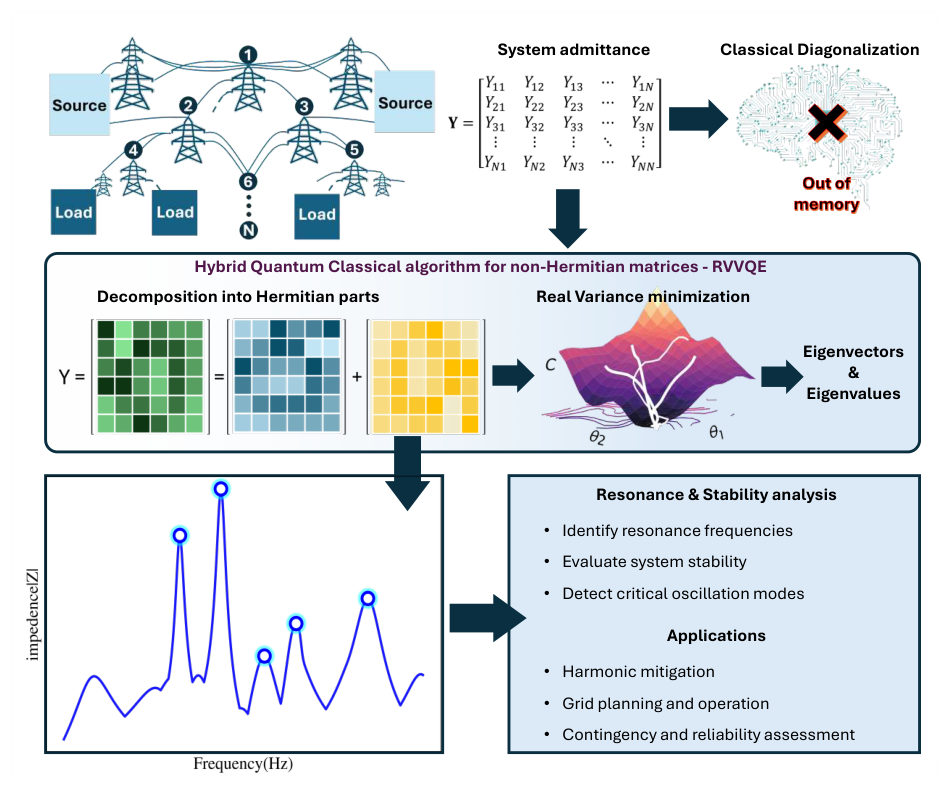
<figcaption class="paper-figure-caption"><b>Fig 1.</b> Fig. 1. Overview of the proposed hybrid quantum-classical framework for resonance mode analysis (RMA) of power transmission grids. The system admittance matrix is decomposed into Hermitian components and solved using the Real Variance-based Variational Quantum Eigensolver (RVVQE) to obtain the eigenvalues and eigenvectors required for resonance and stability analysis.</figcaption>
</figure>
<figure class="paper-figure-card">
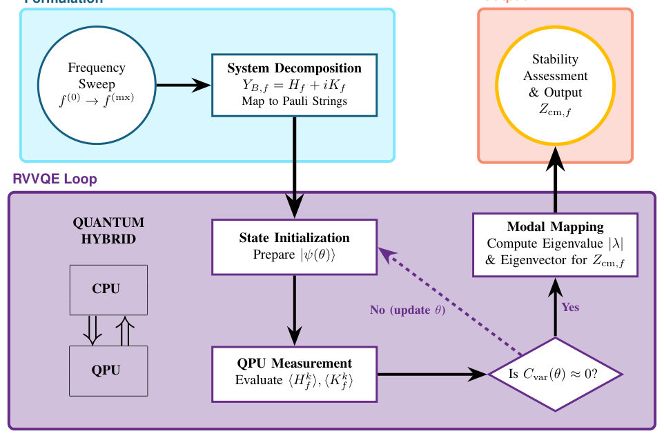
<figcaption class="paper-figure-caption"><b>Fig 2.</b> Fig. 2. Workflow of the proposed hybrid quantum-classical (HQC) framework for resonance mode analysis. The non-Hermitian admittance matrix is decomposed into Hermitian components and mapped to Pauli operators. The RVVQE algorithm iteratively prepares the quantum state, performs QPU measurements, and updates the circuit parameters until convergence, after which the resonance modes are extracted for stability assessment.</figcaption>
</figure>
<figure class="paper-figure-card">
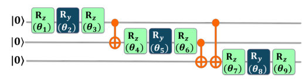
<figcaption class="paper-figure-caption"><b>Fig 3.</b> Fig. 3. Three-qubit unitary rotation entangled ansatz with nearest-neighbor CNOT gates. The complete rotation for each qubit allows exploration of full Hilbert space spanned by 3 qubits.</figcaption>
</figure>
<figure class="paper-figure-card">
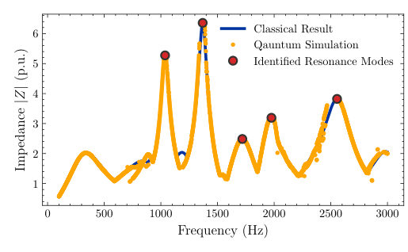
<figcaption class="paper-figure-caption"><b>Fig 4.</b> Fig. 4. Validation of the quantum algorithmic framework on the 5-bus transmission system. The critical resonance modal impedance (|Zcm|) is plotted across a continuous frequency spectrum. The solid blue line represents the exact classical solution derived via standard matrix diagonalization, while the red markers indicate the eigenvalues computed using the Quantum RVVQE algorithm. The near-perfect overlap confirms the accuracy of the quantum approach in capturing the singularities of the non-Hermitian admittance matrix.</figcaption>
</figure>
</div>

<p><strong>Summary.</strong> The paper introduces a quantum-classical hybrid solver to overcome the computational bottleneck of analyzing resonance instabilities in massive power grids. By adapting the RVVQE algorithm for non-Hermitian matrices, it maps the grid's admittance matrix onto a QPU. This scalable approach promises to diagnose continental-scale electrical network failures currently beyond classical computing limits.</p>
<p><strong>Why it may be interesting.</strong> This work directly applies advanced quantum algorithms (RVVQE) to a complex engineering problem involving open quantum systems dynamics, bridging theoretical quantum computation with large-scale physical infrastructure analysis.</p>
<details>
<summary>Detailed structure</summary>
<p><strong>Main problem.</strong> Evaluating critical resonance modes of large-scale interacting power grids is computationally intractable for classical methods due to the need to diagonalize massive, non-Hermitian admittance matrices.</p>
<p><strong>Main result.</strong> The proposed quantum-classical hybrid methodology successfully extracts critical resonance modal impedances with near-perfect accuracy compared to classical solutions on test systems.</p>
<p><strong>Method.</strong> A novel Quantum-Classical Hybrid Resonance Mode Analysis (Q-RMA) framework is used, employing the Real Variance-based Variational Quantum Eigensolver (RVVQE) algorithm to handle the non-Hermitian nature of the grid admittance matrix ($\mathbf{Y}_{B,f}$).</p>
<p><strong>Model / system.</strong> The system modeled is a multi-terminal power transmission grid, represented mathematically by its frequency-dependent, non-Hermitian admittance matrix ($\mathbf{Y}_{B,f}$), which governs dynamic instabilities.</p>
<p><strong>Key observables.</strong> Critical resonance modal impedances ($Z_{cm,f}$) and eigenvalues of the admittance matrix across a wide frequency spectrum (100 Hz to 3000 Hz).</p>
<p><strong>Important parameters / regimes.</strong> The size of the grid ($n$-bus system), which dictates the required number of qubits ($\lceil\log_2 n
ceil$).</p>
<p><strong>Assumptions / limitations.</strong> Standard quantum eigensolvers are insufficient because they only handle Hermitian matrices, necessitating the use of RVVQE for the non-Hermitian $\mathbf{Y}_{B,f}$.</p>
<p><strong>Figures summary.</strong> Figure 1 illustrates the hybrid framework mapping $\mathbf{Y}_{B,f}$ onto a QPU using RVVQE. Figure 2 shows the iterative workflow (Q-RMA) across frequency sweeps. Figure 4 compares quantum RVVQE results against exact classical solutions for $|Z_{cm}|$.</p>
<p><strong>Paper structure.</strong> The paper outlines the problem (harmonic distortions in grids), proposes the Q-RMA methodology involving matrix decomposition ($\mathbf{Y}_{B,f} = \mathbf{H}_f + i\mathbf{K}_f$), details the RVVQE implementation for non-Hermitian operators, and validates the approach by comparing quantum results to classical benchmarks.</p>
</details>
<details>
<summary>Abstract</summary>
<p>The proliferation of power electronics in multi-terminal transmission grids has increasingly led to harmonic distortions and dynamic instabilities. While Resonance Mode Analysis (RMA) provides deep insights into these system resonances, evaluating the critical modes of large-scale grids presents a severe computational bottleneck. Classical iterative techniques must continuously diagonalize massively high-dimensional, non-Hermitian admittance matrices across a wide frequency spectrum, a process that rapidly exhausts classical memory and processing limits. To overcome this scaling barrier, we propose a novel quantum-classical hybrid methodology that natively maps the transmission grid's admittance matrix onto a Quantum Processing Unit (QPU). Because the grid's matrix is non-Hermitian, standard quantum eigensolvers are insufficient; thus, we employ the Real Variance-based Variational Quantum Eigensolver (RVVQE) algorithm to accurately extract the complex eigenvalues that represent the system's modes. Validated against a standard 5-bus transmission system, the quantum-derived critical-resonance modal impedances demonstrate near-perfect alignment with the exact classical frequency responses. Crucially, by encoding the grid's state logarithmically into quantum memory, this methodology bypasses classical RAM limitations. The successful implementation of the RVVQE framework not only bridges the mathematical topologies of dissipative electrical grids and open quantum systems but also provides a profoundly scalable architecture capable of diagnosing resonance instabilities in massive, continental-scale networks that currently exceed classical computational boundaries.</p>
</details>
<p><sub><a href="#top">↑ back to top</a></sub></p>

<p><a id="paper-2607.29646"></a></p>
<h3 id="study-of-the-anomalous-hall-effect-by-tuning-the-spin-orientation-in-the-altermagnetic-material-crsb"><a href="http://arxiv.org/abs/2607.29646v1">Study of the Anomalous Hall effect by tuning the spin orientation in the Altermagnetic material CrSb</a></h3>
<p><strong>Authors:</strong> Sreedevi Chintalapudi, Upasana Agrawal, Suvadip Das<br>
<strong>Type:</strong> theory · <strong>Category:</strong> strongly correlated electrons · <strong>PDF:</strong> <a href="https://arxiv.org/pdf/2607.29646v1">https://arxiv.org/pdf/2607.29646v1</a><br>
<strong>Analysis basis:</strong> full PDF text, analyzed in chunks
<strong>Topic relevance:</strong> <code>Keldysh / 2PI / non-Gaussian methods</code> <strong>1/5</strong> · <code>analog quantum simulation</code> <strong>1/5</strong> · <code>spintronics-quantum-optics interface</code> <strong>1/5</strong></p>
<div class="figure-strip-hint">↔ Scroll figures horizontally</div>
<div class="paper-figures-scroll">
<figure class="paper-figure-card">
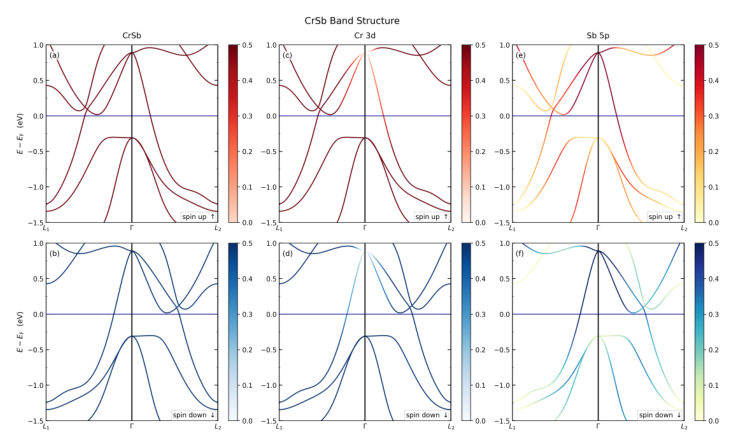
<figcaption class="paper-figure-caption"><b>Fig 1.</b> FIG. 1 : Band structure of CrSb for the different spin orientations of the Cr spin moment. The results elucidate the symmetry leading to altermagnetism with separate spin polarizations of the band along particular brillouin zone directions connected by rotational symmetry.</figcaption>
</figure>
<figure class="paper-figure-card">
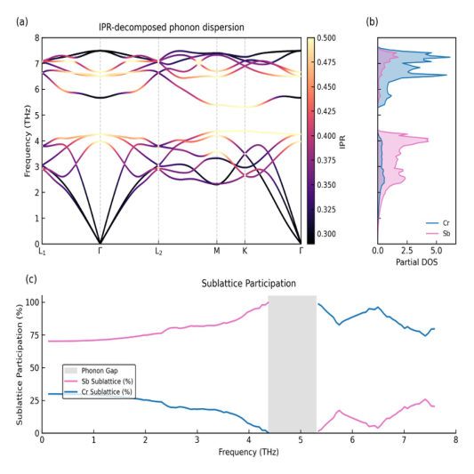
<figcaption class="paper-figure-caption"><b>Fig 2.</b> FIG. 2 : Phonon dispersion relations for the altermagnetic compound CrSb. (a) Phonon dispersion decomposed by Inverse participation ratio (IPR) as a function of the Brillouin zone (b) Atom decomposed phonon density of states (c) Sublattice participation fraction of phonon energy for the Cr and Sb atoms.</figcaption>
</figure>
<figure class="paper-figure-card">
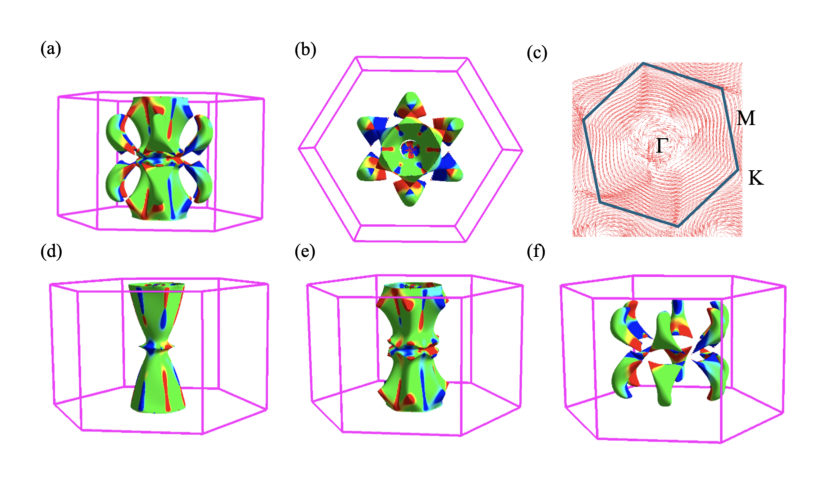
<figcaption class="paper-figure-caption"><b>Fig 3.</b> FIG. 3 : Fermi surface of CrSb color coded by the momentum dependent berry curvature contributions from (a) lateral view (b) top view (c) quiver plot of berry curvature in the hexagonal ab plane within the Brillouin zone (d)-(f) band decomposed berry curvature contributions to the anomalous hall conductivity.</figcaption>
</figure>
<figure class="paper-figure-card">
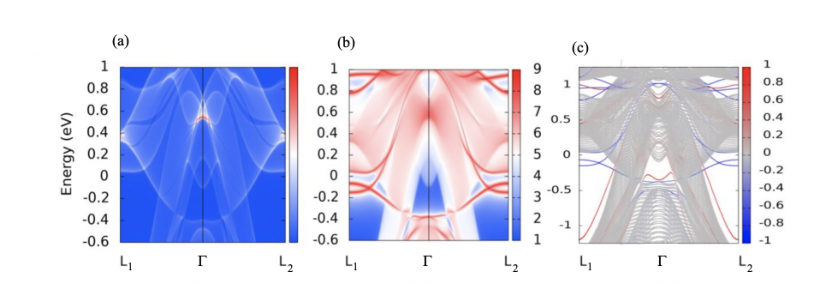
<figcaption class="paper-figure-caption"><b>Fig 4.</b> FIG. 4 : Slab calculations of the projected energy spectrum along the (001) plane obtained from tight binding calculations showing (a) the bulk energy spectrum (c) surface density of states and energy spectrum (c) existence of topological surface states.</figcaption>
</figure>
<figure class="paper-figure-card">
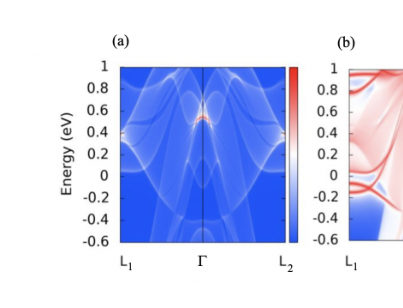
<figcaption class="paper-figure-caption"><b>Fig 5.</b> Fig. 1(a) and (b) displays the spin resolved (up and down respectively) bands along the L1 −Γ −L2 direction, whereas Fig. 1(c)-(f) displays the orbital and spin resolution of the electronic bands. Note that the Cr 3d orbitals contribute significantly towards both the valence and conduction states of the electronic spectrum, whereas the Sb 5p orbitals contribute signifi- cantly to the conduction states respectively. A detailed</figcaption>
</figure>
</div>

<p><strong>Summary.</strong> This paper theoretically investigates the Anomalous Hall effect in the altermagnetic material CrSb. Using advanced DFT calculations, the authors map out the electronic structure and topological properties of the material under various spin alignments. The key finding is that the AHE conductivity does not follow a simple linear relationship with magnetization for altermagnets, suggesting a necessary revision of current theoretical models.</p>
<p><strong>Why it may be interesting.</strong> While focused on condensed matter magnetism, the rigorous calculation of topological invariants (Berry curvature) and their relation to transport coefficients provides advanced theoretical tools applicable to understanding quantum response in strongly correlated systems.</p>
<details>
<summary>Detailed structure</summary>
<p><strong>Main problem.</strong> The study investigates the Anomalous Hall effect (AHE) in the altermagnetic material CrSb, specifically questioning the conventional assumption that AHE conductivity must scale linearly with magnetization.</p>
<p><strong>Main result.</strong> The authors demonstrate through calculations that the anomalous Hall conductivity in altermagnets like CrSb does not necessarily exhibit a simple linear dependence on magnetization, challenging existing theoretical frameworks for magnetic materials.</p>
<p><strong>Method.</strong> The research employs first-principles Density Functional Theory (DFT) coupled with maximally localized Wannier functions to calculate electronic spectra, Berry curvature, and topological surface states.</p>
<p><strong>Model / system.</strong> The physical system is the altermagnetic compound CrSb. The theoretical framework involves calculating the AHE using Kubo formalism and analyzing the dependence of the anomalous Hall conductivity on various spin configurations and external fields.</p>
<p><strong>Key observables.</strong> Anomalous Hall conductivity (sigma_xy), electronic band structure, phonon dispersion relations, geometrical Berry curvature, and topological surface states.</p>
<p><strong>Important parameters / regimes.</strong> The analysis considers multiple magnetic configurations (e.g., coplanar vs. staggered spin orientations) and the dependence on the net magnetic moment.</p>
<p><strong>Assumptions / limitations.</strong> The study assumes that standard AHE models based on simple linear magnetization scaling are insufficient for describing complex magnetic orders like altermagnetism.</p>
<p><strong>Figures summary.</strong> Figures illustrate band structures for different spin orientations, phonon dispersion relations, and crucially, show the calculated anomalous Hall conductivity dependence on various sublattice spin alignments, confirming non-linear behavior.</p>
<p><strong>Paper structure.</strong> The paper progresses by establishing the theoretical background of AHE in novel magnetic phases (altermagnetism), detailing advanced computational methods using MLWF/DFT, presenting calculations for CrSb's electronic and topological properties, and concluding with a re-evaluation of the linear magnetization dependence theory.</p>
</details>
<details>
<summary>Abstract</summary>
<p>Recent development in the field of altermagnetism, and increased demand for the search of applications of anomalous hall effect have ushered in a new era for novel quantum phases in materials. Quantum materials previously anticipated to be scientifically predictable have unfolded novel properties that brought them into the spotlight. These manifestations have led us to rethink our understanding of existing classification of magnetic materials and preexisting notions about anomalous hall effect in the light of topologically nontrivial phases of matter. One such recent de- velopment lies in the novel class of alter-magnetic materials with prospect for quantum computing. In this article, we delineate the spin and orbital resolved electronic spectrum, mode-decomposed phonon dispersion relations, geometrical berry curvature and topological surface states and their implications on anomalous Hall conductivity in the promising altermagnetic compound CrSb. We further utilize first principles calculations coupled with computationally efficient maximally localized wannier states of numerous magnetic configurations of the altermagnet to simulate the effect of external fields and elucidate the fact that the linear behaviour of anomalous hall conductivity with magnetization does not necessarily hold true for all magnetic classes, such as altermagnets.</p>
</details>
<p><sub><a href="#top">↑ back to top</a></sub></p>

<p><a id="paper-2607.29054"></a></p>
<h3 id="optimal-complex-conjugation-of-unknown-isometry-channels"><a href="http://arxiv.org/abs/2607.29054v1">Optimal complex conjugation of unknown isometry channels</a></h3>
<p><strong>Authors:</strong> Satoshi Yoshida, Mio Murao<br>
<strong>Type:</strong> theory · <strong>Category:</strong> quantum information and computing · <strong>PDF:</strong> <a href="https://arxiv.org/pdf/2607.29054v1">https://arxiv.org/pdf/2607.29054v1</a><br>
<strong>Analysis basis:</strong> full PDF text, analyzed in chunks
<strong>Topic relevance:</strong> <code>entanglement &amp; information structure</code> <strong>1/5</strong> · <code>quantum measurements</code> <strong>1/5</strong></p>
<div class="figure-strip-hint">↔ Scroll figures horizontally</div>
<div class="paper-figures-scroll">
<figure class="paper-figure-card">
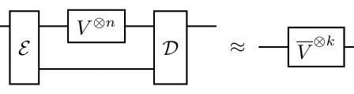
<figcaption class="paper-figure-caption"><b>Fig 1.</b> Fig. 1. Illustration of the task of isometry complex conjugation. By using n parallel queries of an unknown isometry channel V(ρ) = V ρV † with V : Cd →CD, we implement a channel approximating k parallel queries of the complex conjugate channel V(ρ) = V ρV ⊤. We illustrate a parallel protocol with an encoder E and a decoder D. The optimal protocol is shown to be parallel even within the general class of deterministic supermaps for the case of k = 1, which also contains adaptive and indefinite-causal-order strategies [41], [18], [42]. For k ≥1, the asymptotic optimality of the estimation-based parallel protocol is shown for fixed d, D, k and n →∞.</figcaption>
</figure>
<figure class="paper-figure-card">
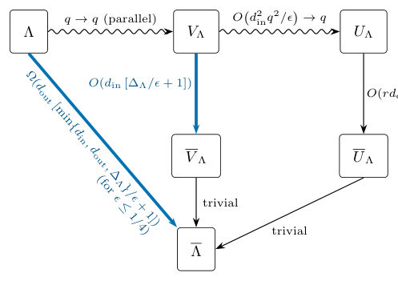
<figcaption class="paper-figure-caption"><b>Fig 2.</b> Fig. 2. Application of this work to complex conjugation of unknown quantum channels. Each arrow indicates a lifting from one access model to another, which can be implemented with a certain overhead in the query complexity, and blue arrows are constructed in this work. The wave arrow indicates a randomized lifting, which implements q queries of the randomly chosen target access (called the acorn trick [4]). The access to rank-r unknown quantum channel Λ : L(Cdin) →L(Cdout) is lifted to the access to its Stinespring dilation isometry VΛ such that TrE[VΛ(·)V † Λ] = Λ(·) using an environmental system E ≃Cr. For q ∈Z+, q parallel queries to a randomly chosen dilation isometry VΛ can be...</figcaption>
</figure>
<figure class="paper-figure-card">
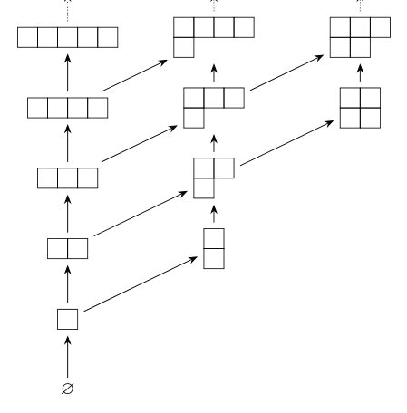
<figcaption class="paper-figure-caption"><b>Fig 3.</b> Fig. 3. An example of the restricted Young lattice Yd for d = 2. It consists of vertices labeled by the Young diagrams λ ⊢d n for n ∈Z≥0, and edges α →λ with λ ∈α +d □.</figcaption>
</figure>
<figure class="paper-figure-card">
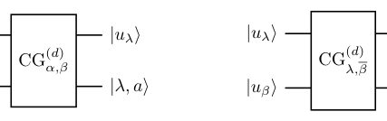
<figcaption class="paper-figure-caption"><b>Fig 4.</b> Fig. 4. (Left panel) The CG transforms in the quantum circuit. Two input registers correspond to the Weyl modules U(d) α and U(d) β . The first output register</figcaption>
</figure>
<figure class="paper-figure-card">
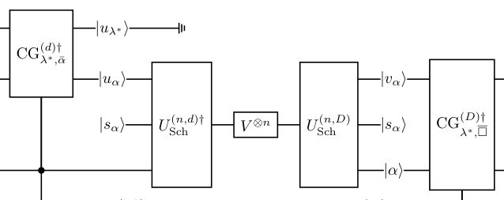
<figcaption class="paper-figure-caption"><b>Fig 5.</b> Fig. 6. The optimal parallel protocol for complex conjugation of an unknown isometry V : Cd →CD from n calls. See the proof sketch of Prop. 9 for the details of the implementation.</figcaption>
</figure>
</div>

<p><strong>Summary.</strong> This paper determines the optimal way to approximate the complex conjugate of an unknown quantum isometry channel using only multiple calls to the original channel. By employing advanced tools like Schur-Weyl duality and SDP, the authors derive precise formulas for the achievable fidelity and establish a query complexity scaling law. This advances the understanding of resource limitations in black-box quantum process simulation.</p>
<p><strong>Why it may be interesting.</strong> This work establishes fundamental resource limitations for simulating complex operations (like conjugation) in quantum information theory, providing concrete query complexity bounds that are crucial for designing efficient quantum protocols.</p>
<details>
<summary>Detailed structure</summary>
<p><strong>Main problem.</strong> The core problem is determining the optimal deterministic protocol to approximate the complex conjugate of an unknown quantum isometry channel, $\overline{V}$, using only limited calls to the original channel $V$. This addresses fundamental questions about simulating inverse or adjoint operations with black-box access.</p>
<p><strong>Main result.</strong> The authors derive a closed-form expression for the optimal fidelity and establish that a parallel protocol achieves this optimum. The query complexity required is found to be $n = \Theta(d[(D-d)/\epsilon + 1])$.</p>
<p><strong>Method.</strong> The analysis employs advanced techniques including semidefinite programming (SDP), Schur–Weyl duality, and the construction of optimal quantum circuits utilizing the quantum Schur transform and dual Clebsch–Gordan transforms.</p>
<p><strong>Model / system.</strong> The model involves unknown isometry channels $V: \mathbb{C}^d	o\mathbb{C}^D$, which are generalized to superchannels. The analysis is framed in terms of channel operations and their representation via Stinespring dilations.</p>
<p><strong>Key observables.</strong> Optimal fidelity ($F$), query complexity ($n$), and circuit complexity $O(	ext{poly}(D, 1/\epsilon))$ for the approximation.</p>
<p><strong>Important parameters / regimes.</strong> The dimensions of the input ($d$) and output ($D$) spaces, the desired infidelity ($\epsilon$), and the number of copies ($k$).</p>
<p><strong>Assumptions / limitations.</strong> The work focuses on <em>approximate</em> implementation, as exact complex conjugation is impossible with finite queries. Optimality proofs hold even against adaptive or indefinite-causal strategies.</p>
<p><strong>Figures summary.</strong> Figures illustrate the task (approximating $\overline{V}$ from $V$ calls) and detail the quantum circuit constructions based on the Schur transform and Clebsch–Gordan transforms.</p>
<p><strong>Paper structure.</strong> The paper systematically derives optimal fidelity bounds using SDP, proves the optimality of a parallel protocol via algebraic methods involving expectation values, extends results to multi-copy channels, and finally applies the framework to general unknown quantum superchannels.</p>
</details>
<details>
<summary>Abstract</summary>
<p>Access to the complex conjugate of an unknown quantum channel is a useful resource in quantum oracle problems, motivating the question of how such access can be simulated using only a limited number of calls to the original channel. We determine the optimal deterministic protocol for approximately implementing the complex conjugate isometry $\overline{V}$ from $n$ uses of an unknown isometry channel $V: \mathbb{C}^d\to\mathbb{C}^D$. We derive a closed-form expression for the optimal fidelity and prove that a parallel protocol is optimal even among general quantum superchannels, including adaptive and indefinite-causal-order strategies. The formula implies a query complexity $n=Θ(d[(D-d)/ε+1])$ for achieving infidelity $ε$. We also present a circuit construction based on the quantum Schur transform and the dual Clebsch--Gordan transform, with circuit complexity $O(\mathrm{poly}(D,1/ε))$. This task is extended to the multi-copy case $V^{\otimes n}\mapsto \overline{V}^{\otimes k}$. For fixed $d<D$ and $k$, we show that the optimal fidelity for the multi-copy case is $1-kd(D-d)/n+o(n^{-1})$, and that this value is asymptotically attained by a parallel estimation-based protocol. Finally, combining the isometry protocol with random Stinespring dilations yields a protocol for complex conjugation of unknown rank-$r$ quantum channels whose query complexity is optimal up to a constant factor if the Kraus rank $r$ is constant.</p>
</details>
<p><sub><a href="#top">↑ back to top</a></sub></p>

<p><a id="paper-2607.29603"></a></p>
<h3 id="qubit-loss-inference-with-stabilizer-codes-without-leakage-detection-units"><a href="http://arxiv.org/abs/2607.29603v1">Qubit Loss Inference with Stabilizer Codes without Leakage Detection Units</a></h3>
<p><strong>Authors:</strong> Shin Nishio, Takeaki Uno, Fumiyoshi Kobayashi, Takahiko Satoh, Dan E. Browne<br>
<strong>Type:</strong> theory · <strong>Category:</strong> quantum information and computing · <strong>PDF:</strong> <a href="https://arxiv.org/pdf/2607.29603v1">https://arxiv.org/pdf/2607.29603v1</a><br>
<strong>Analysis basis:</strong> full PDF text, analyzed in chunks
<strong>Topic relevance:</strong> <code>quantum measurements</code> <strong>1/5</strong></p>
<div class="figure-strip-hint">↔ Scroll figures horizontally</div>
<div class="paper-figures-scroll">
<figure class="paper-figure-card">
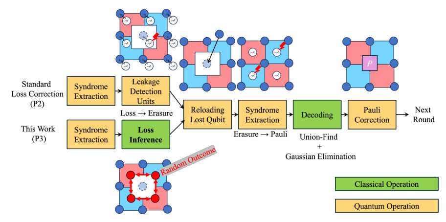
<figcaption class="paper-figure-caption"><b>Fig 1.</b> Figure 1. Loss correction protocol flows. The standard protocol to deal with loss errors is converting the loss error into an erasure at a known location via leakage detection units. Instead of leakage detection units, we propose a protocol with loss inference, which no longer requires running an additional circuit, which reduces overhead and eliminates a source of noise. After applying one of them, one can apply reloading, syndrome extraction, decoding, and Pauli error correction, or Pauli frame update. Note that surface code is used as an example, but both protocols can be easily generalized to arbitrary stabilizer codes by replacing the decoder.</figcaption>
</figure>
<figure class="paper-figure-card">
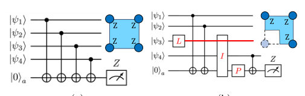
<figcaption class="paper-figure-caption"><b>Fig 2.</b> Figure 2. (a) A quantum circuit for stabilizer measurement on Z1Z2Z3Z4 operator. (b) A quantum circuit intended to execute stabilizer measurement for Z1Z2Z3Z4 operators on a punctured system, which resulted in measuring an effective gauge operator ±Z1Z2Z4 where the sign is determined by the Pauli error operator P.</figcaption>
</figure>
<figure class="paper-figure-card">
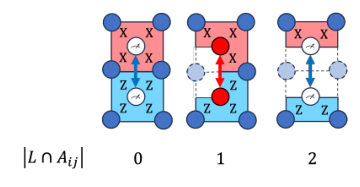
<figcaption class="paper-figure-caption"><b>Fig 3.</b> Figure 3. The commutation (blue double arrow) / anti- commutation (red double arrow) relations of a pair of check operators si and sj. Blue vertices represent surviving data qubits and the dotted light blue vertices represent the lost qubits. Each vertex on the face is the auxiliary qubit for a check operator. (Left) Precondition: Aij = 2 ≡0 (mod 2) so that two checks si and sj commute. (Center) For the case of single loss, |Aij ∩L| ≡1 (mod 2), and so two checks anticommute. This loss is detectable. (Right) For an even number of losses on Aij, two checks commute, therefore not detectable from the statistics of two stabilizer checks.</figcaption>
</figure>
<figure class="paper-figure-card">
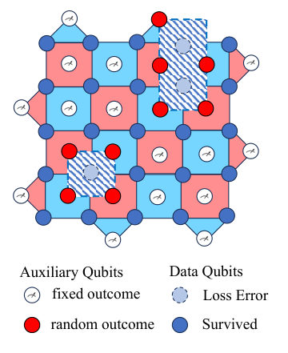
<figcaption class="paper-figure-caption"><b>Fig 4.</b> Figure 4. An instance of the loss inference problem on a rotated surface code. Given checks with random outcome depicted as red vertices, find the loss error pattern shown as the shaded area.</figcaption>
</figure>
<figure class="paper-figure-card">
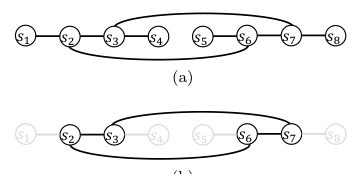
<figcaption class="paper-figure-caption"><b>Fig 5.</b> Figure 6. (a) The check interaction graph of the rotated surface code shown in Fig. 5. (b) E5, the induced subset of edges whose label will be flipped by the loss on q5.</figcaption>
</figure>
</div>

<p><strong>Summary.</strong> This paper proposes an alternative to using dedicated Leakage Detection Units (LDUs) to handle qubit loss in fault-tolerant quantum computing. By analyzing the syndrome data obtained from standard stabilizer measurements, the authors derive a mathematical condition based on anticommutation relations that proves when and how qubit loss can be inferred. This method promises reduced space-time overhead while maintaining low logical error rates for near-term hardware.</p>
<p><strong>Why it may be interesting.</strong> It provides a purely theoretical framework for mitigating physical errors in quantum computation by transforming hardware overheads (LDUs) into algorithmic/measurement-based diagnostics derived from fundamental algebraic properties of stabilizer codes.</p>
<details>
<summary>Detailed structure</summary>
<p><strong>Main problem.</strong> The paper addresses the challenge of qubit loss during quantum computation, aiming to infer the location of lost qubits directly from syndrome measurements without relying on dedicated hardware like Leakage Detection Units (LDUs).</p>
<p><strong>Main result.</strong> It derives a sufficient condition for loss detectability based on the anticommutation of punctured stabilizer checks and shows that inference-based protocols can reduce logical error rates compared to LDU baselines in near-term regimes with less overhead.</p>
<p><strong>Method.</strong> The authors develop theoretical criteria by analyzing the commutation relations between syndrome generators after accounting for lost qubits, formulating the problem as a maximum-likelihood/minimum set cover problem, and simulating performance on the surface code.</p>
<p><strong>Model / system.</strong> The work is situated in the context of fault-tolerant quantum computation using stabilizer codes. The analysis models qubit loss under a non-entangling gate assumption for lost qubits, evaluating protocols on the rotated surface code.</p>
<p><strong>Key observables.</strong> Logical error rate, anticommutation relations between punctured stabilizer checks ($s'_i s'_j = -s'_j s'_i$), and auxiliary qubit overhead.</p>
<p><strong>Important parameters / regimes.</strong> Low-to-moderate loss rates relevant to near-term hardware; the structure of the underlying stabilizer code (e.g., surface code).</p>
<p><strong>Assumptions / limitations.</strong> The gate model assumes non-entangling behavior for gates involving a lost qubit, and the analysis relies on establishing sufficient conditions rather than necessary ones.</p>
<p><strong>Figures summary.</strong> Figures illustrate flow diagrams comparing LDU vs. inference protocols, and show how commutation/anticommutation relations change based on the number of lost qubits relative to stabilizer generators.</p>
<p><strong>Paper structure.</strong> The paper progresses from identifying the hardware overhead of LDUs to deriving a mathematical condition for loss detectability via syndrome data (based on anticommutation), formalizing this into an inference problem, and finally validating the protocol through noise simulations on specific platforms.</p>
</details>
<details>
<summary>Abstract</summary>
<p>Qubit loss occurs when the physical carrier of a qubit leaves the computational system without directly revealing the event's location. Such errors are a major obstacle to fault-tolerant quantum computation on platforms including photonic, neutral-atom, and trapped-ion systems. Loss locations are commonly identified using additional hardware operations such as leakage-detection units (LDUs), which introduce space-time overhead and may themselves become a source of error. We investigate whether qubit loss on stabilizer codes can instead be inferred from syndrome data obtained through standard repeated stabilizer measurements. Under a non-entangling model for gates involving a lost qubit, we derive a sufficient condition for loss detectability in general stabilizer codes. The condition is based on the emergence of anticommutation between stabilizer checks after their support on the lost qubits is removed. By using that condition, we formulate the exact loss-inference problem using the observed set of non-deterministic checks together with its maximum-likelihood formulation. We then relax the problem to the minimum set cover problem with a greedy heuristic algorithm. We evaluate the resulting inference and loss-correction protocols on the rotated surface code via circuit-level noise simulations for trapped-ion and neutral-atom platforms. On both platforms, inference-based and adaptive protocols reduce the logical error rate relative to a noisy-LDU baseline in the low-to-moderate loss-rate regime relevant to near-term hardware, while requiring fewer space-time overheads.</p>
</details>
<p><sub><a href="#top">↑ back to top</a></sub></p>

<p><a id="paper-2607.29151"></a></p>
<h3 id="successive-electronic-topological-transitions-in-the-antiferromagnet-updmath798mathalmath799math"><a href="http://arxiv.org/abs/2607.29151v1">Successive Electronic Topological Transitions in the Antiferromagnet UPd$_2$Al$_3$</a></h3>
<p><strong>Authors:</strong> Adrien Gourgout, Gaël Bastien, Dai Aoki, Gabriel Seyfarth, Ilya Sheikin, Andrey Varlamov, Gertrud Zwicknagl, Jacques Flouquet, Georg Knebel, Alexandre Pourret<br>
<strong>Type:</strong> both · <strong>Category:</strong> strongly correlated electrons · <strong>PDF:</strong> <a href="https://arxiv.org/pdf/2607.29151v1">https://arxiv.org/pdf/2607.29151v1</a><br>
<strong>Analysis basis:</strong> full PDF text, analyzed in chunks
<strong>Topic relevance:</strong> <code>Keldysh / 2PI / non-Gaussian methods</code> <strong>1/5</strong></p>
<div class="figure-strip-hint">↔ Scroll figures horizontally</div>
<div class="paper-figures-scroll">
<figure class="paper-figure-card">
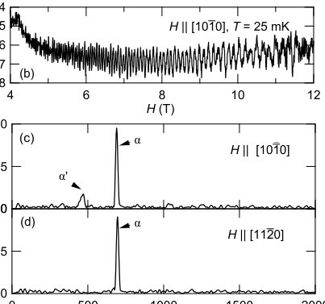
<figcaption class="paper-figure-caption"><b>Fig 1.</b> Figure 3. (Color online). (a) Angular dependence of the dHvA frequencies, in good agreement with the literature [37], except for the α′ branch between the [10¯10] to [11¯20] direction, which has not been observed previously. (b) Field dependence of the dHvA signal from 4 to 12 T (below HM) for H ∥[10¯10] at T = 25 mK. Quantum oscillations are observable within the entire field range. (c) Corresponding FFT spectrum (for H ∥[10¯10]), and also for H ∥[11¯20] (d) .</figcaption>
</figure>
<figure class="paper-figure-card">
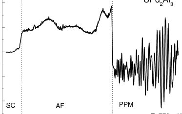
<figcaption class="paper-figure-caption"><b>Fig 2.</b> Figure 4. Field dependence S(H) of the TEP with thermal gradient along [11¯20] at T = 770 mK for H∥[10¯10]. Quan- tum oscillations suddenly appear above a steep jump and sign change at the first order transition at HM. Below HM, there are five successive anomalies, but quantum oscillations are not observed.</figcaption>
</figure>
<figure class="paper-figure-card">
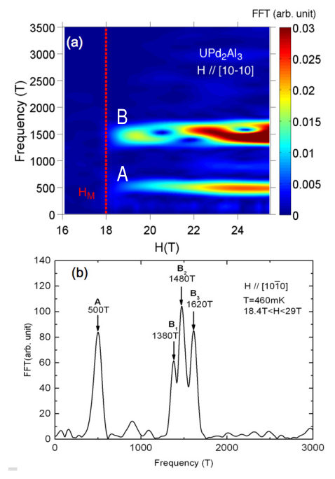
<figcaption class="paper-figure-caption"><b>Fig 3.</b> Figure 5. (Color online) (a) Linear color map of the FFT intensity in the frequency-magnetic field plane from 15 T to 29 T for H ∥[10¯10]. The FFT analysis is done over a sliding window of width 1 Hmin − 1 Hmax = 0.01 T−1. (b) FFT of the TEP signal between 18.4 T and 28.9 T. A frequency of 500 T (A) and three close ones of 1380 (B1) , 1480 (B2) and 1620 T (B3) are resolved.</figcaption>
</figure>
<figure class="paper-figure-card">
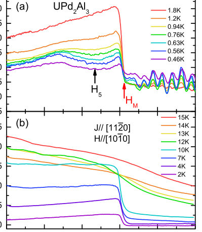
<figcaption class="paper-figure-caption"><b>Fig 4.</b> Figure 6. (Color online). Temperature evolution of the TEP anomaly at HM. (a) At low temperature, quantum os- cillations appear above the first oder transition at HM. The anomaly H5 (black arrow, see text in section IV.) is also repre- sented. (b) Above 10 K, the transitions broaden significantly, indicating a cross-over area between PM and PPM states.</figcaption>
</figure>
<figure class="paper-figure-card">
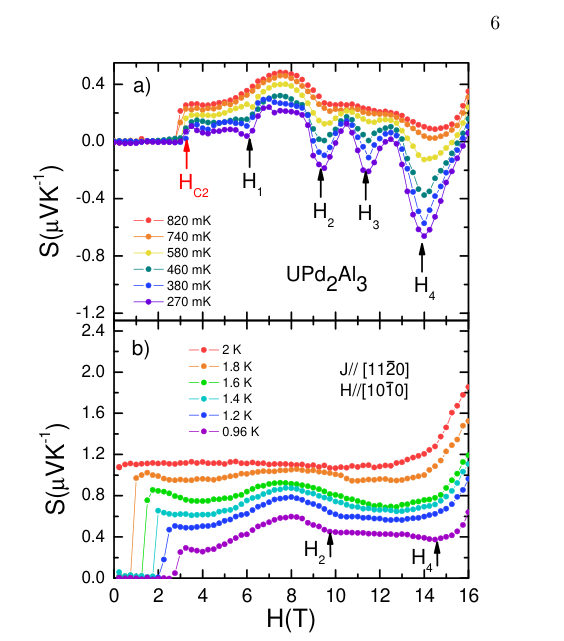
<figcaption class="paper-figure-caption"><b>Fig 5.</b> Figure 7. (Color online). (a) A succession of anomalies (black vertical arrows) is observed at low temperatures in the thermoelectric response on a large magnetic field range be- tween 4 and 16 T, for H ∥[10¯10]. (b) Above 1 K, the different anomalies fade away and finally disappear.</figcaption>
</figure>
</div>

<p><strong>Summary.</strong> This paper reports on evidence of successive electronic topological transitions in UPd2Al3 as it moves from an antiferromagnetic to a paramagnetic state under high magnetic fields. By analyzing sharp anomalies in thermoelectric power and Hall measurements, the authors argue for a strong Fermi surface reconstruction at the metamagnetic transition. The combination of transport diagnostics and theoretical modeling highlights how field-induced changes govern the electronic properties of heavy fermion systems.</p>
<p><strong>Why it may be interesting.</strong> This work exemplifies how high-field magnetotransport measurements are crucial for mapping out complex electronic phase diagrams in strongly correlated materials, providing signatures (like sign changes and quantum oscillations) that point toward fundamental topological changes in the band structure.</p>
<details>
<summary>Detailed structure</summary>
<p><strong>Main problem.</strong> The study investigates successive electronic topological transitions (ETTs) occurring in the antiferromagnetic state of the heavy fermion compound UPd2Al3 when subjected to a high external magnetic field.</p>
<p><strong>Main result.</strong> The anomalies observed, particularly the sign change in thermoelectric power and Hall coefficient at the metamagnetic transition ($H_M$), strongly indicate a drastic Fermi surface reconstruction driven by band unfolding. This suggests that topological changes are key features of correlated electron behavior in this material.</p>
<p><strong>Method.</strong> The research combines experimental measurements (thermoelectric power, Hall effect, dHvA oscillations) with theoretical analysis using renormalization perturbation theory to model the electronic structure changes.</p>
<p><strong>Model / system.</strong> The physical system is the heavy fermion compound UPd2Al3, which exhibits antiferromagnetism and superconductivity. The focus is on understanding how its Fermi surface topology evolves across magnetic phase transitions (AF $\leftrightarrow$ PPM) under external fields.</p>
<p><strong>Key observables.</strong> Thermoelectric power (Seebeck coefficient $S$), Hall coefficient ($
ho_{xy}$), quantum oscillation frequencies, and effective masses ($m^*$).</p>
<p><strong>Important parameters / regimes.</strong> Magnetic field strength up to 35 T; critical temperatures like Néel temperature ($T_N = 14.5 	ext{ K}$) and superconducting transition temperature ($T_{SC} = 2 	ext{ K}$).</p>
<p><strong>Assumptions / limitations.</strong> The anomalies are attributed to complex topological changes in the Fermi surface driven by the Zeeman effect, suggesting a connection between magnetic field tuning and Lifshitz transitions.</p>
<p><strong>Figures summary.</strong> Figures illustrate temperature dependence of $S(T)$ showing kinks at $T_N$ and steps at $T_{SC}$; magnetoresistance/Hall measurements show anomalies at $H_M$; and FFT analysis reveals quantum oscillation frequencies above $H_M$.</p>
<p><strong>Paper structure.</strong> The paper systematically presents transport measurements across the AF to PPM transition, using multiple diagnostics (TEP, Hall effect) to pinpoint the metamagnetic field ($H_M$). Theoretical modeling is then used to interpret these sharp changes as evidence of Fermi surface reconstruction.</p>
</details>
<details>
<summary>Abstract</summary>
<p>We report successive anomalies at low temperature in the magnetic field dependence of the thermoelectric signal in the heavy fermion compound UPd$_{2}$Al$_{3}$ inside the antiferromagnetic state up to the metamagnetic transition at $H_\text{M} =18$~T. Based on renormalisation perturbation theory and the partitioning of the $f$ orbitals into localized and delocalized parts, our analysis attributes these anomalies to complex topological changes of the Fermi surface driven by Zeeman effect. The observation of a sudden change of sign both in the thermoelectric power and in the Hall coefficient at $H_\text{M}$ in addition to the appearance of large quantum oscillations in the thermoelectric power above $H_\text{M}$ indicate a strong Fermi surface reconstruction at the metamagnetic transition due to the unfolding of the electronic bands.</p>
</details>
<p><sub><a href="#top">↑ back to top</a></sub></p>

<p><a id="paper-2607.28845"></a></p>
<h3 id="transcorrelated-random-phase-approximation"><a href="http://arxiv.org/abs/2607.28845v1">Transcorrelated Random-Phase Approximation</a></h3>
<p><strong>Authors:</strong> Abdallah Ammar, Enzo Monino, Anthony Scemama, Emmanuel Giner, Pierre-François Loos<br>
<strong>Type:</strong> theory · <strong>Category:</strong> strongly correlated electrons · <strong>PDF:</strong> <a href="https://arxiv.org/pdf/2607.28845v1">https://arxiv.org/pdf/2607.28845v1</a><br>
<strong>Analysis basis:</strong> full PDF text, analyzed in chunks
<strong>Topic relevance:</strong> <code>Keldysh / 2PI / non-Gaussian methods</code> <strong>1/5</strong></p>
<div class="figure-strip-hint">↔ Scroll figures horizontally</div>
<div class="paper-figures-scroll">
<figure class="paper-figure-card">
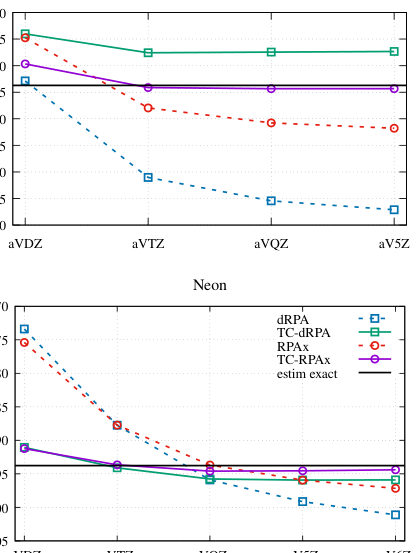
<figcaption class="paper-figure-caption"><b>Fig 1.</b> FIG. 1. Basis set convergence of the total ground-state energies (in a.u.) of the He and Ne atoms. The energies are plotted as a function of the basis set cardinal number X (aug-cc-pVXZ) for dRPA (blue dashed), TC-dRPA (green solid), RPAx (red dashed), and TC- RPAx (purple solid). The horizontal black line denotes the estimated exact non-relativistic ground-state energy, which serves as the CBS reference.196 Raw data can be found in the Supplementary Materials.</figcaption>
</figure>
<figure class="paper-figure-card">
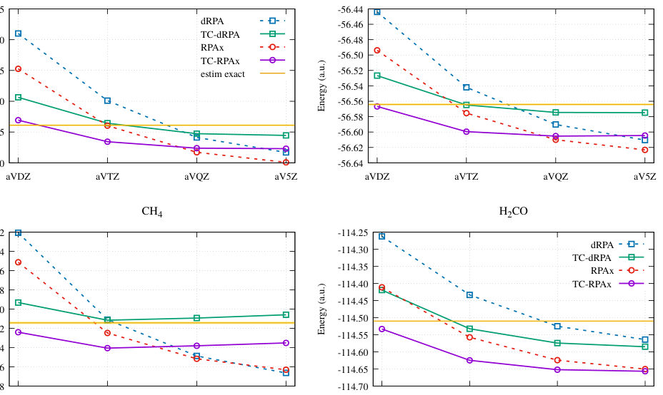
<figcaption class="paper-figure-caption"><b>Fig 2.</b> FIG. 2. Basis-set convergence of the total ground-state energies (in a.u.) of H2O, NH3, CH4, and H2CO as a function of the basis set cardinal number X (aug-cc-pVXZ). Results are shown for dRPA (blue dashed), TC-dRPA (green solid), RPAx (red dashed), and TC-RPAx (purple solid). The horizontal yellow line represents the estimated exact non-relativistic ground-state energy.185,197 Raw data can be found in the Supplementary Materials.</figcaption>
</figure>
</div>

<p><strong>Summary.</strong> This paper introduces the Transcorrelated Random-Phase Approximation (TC-RPA) to enhance electronic structure calculations by incorporating explicit three-body correlation effects via a Jastrow factor. It demonstrates that TC-RPA provides substantial accuracy improvements for ground-state energies in atoms and molecules, making it an efficient tool for ground-state energetics. However, the authors caution that state-specific optimization is needed to accurately model excited states.</p>
<p><strong>Why it may be interesting.</strong> This work directly tackles highly correlated electronic structure problems using advanced many-body techniques (RPA extensions), which is central to understanding chemical bonding and material properties relevant to AMO physics.</p>
<details>
<summary>Detailed structure</summary>
<p><strong>Main problem.</strong> The primary goal is improving electronic structure calculations by addressing the slow basis set convergence of standard Random-Phase Approximation (RPA) due to short-range electron correlation effects.</p>
<p><strong>Main result.</strong> The Transcorrelated RPA (TC-RPA) significantly improves accuracy and accelerates basis set convergence for ground-state correlation energies, but only shows marginal improvement for vertical excitation energies.</p>
<p><strong>Method.</strong> The authors extend the RPA formalism to a non-Hermitian Transcorrelated (TC) Hamiltonian by incorporating three-body interactions via a Jastrow correlation factor. They apply this using both direct and exchange variants of the approximation.</p>
<p><strong>Model / system.</strong> Calculations are performed for atoms (He, Ne) and small molecules (H2O, NH3, CH4, H2CO). The theory utilizes an Equation-of-Motion approach applied to the non-Hermitian TC Hamiltonian, requiring a biorthogonal formalism.</p>
<p><strong>Key observables.</strong> Ground-state correlation energies and vertical excitation energies.</p>
<p><strong>Important parameters / regimes.</strong> The Jastrow correlation factor, which is optimized for the ground state.</p>
<p><strong>Assumptions / limitations.</strong> The primary limitation noted is that optimizing the Jastrow factor only for the ground state limits its effectiveness in describing excited states.</p>
<p><strong>Figures summary.</strong> Not specified by notes; however, a comparison figure mentioned suggests TC-RPA accelerates basis set convergence compared to standard RPA calculations for ground-state energies.</p>
<p><strong>Paper structure.</strong> The paper develops the formalism by extending RPA to the non-Hermitian TC Hamiltonian. It then applies this method to calculate correlation and excitation energies for various molecules, culminating in a comparison of results showing differential improvements between ground and excited states.</p>
</details>
<details>
<summary>Abstract</summary>
<p>We extend the random-phase approximation (RPA) to the non-Hermitian transcorrelated (TC) Hamiltonian, which explicitly includes three-body interactions generated by a Jastrow correlation factor. We consider both the direct RPA (dRPA) and RPA with exchange (RPAx). We apply the resulting TC-dRPA and TC-RPAx methods to calculate ground-state correlation energies and vertical excitation energies for atoms (\ce{He} and \ce{Ne}) and small molecules (\ce{H2O}, \ce{NH3}, \ce{CH4}, and \ce{H2CO}). For ground-state correlation energies, the TC treatment substantially improves accuracy and accelerates basis set convergence, reducing errors by nearly an order of magnitude relative to conventional RPA calculations. By contrast, it yields only marginal improvements in vertical excitation energies. We attribute this limited effect to the ground-state optimization of the Jastrow factor, which does not adequately capture the distinct electronic character of excited states. These results establish TC-RPA as an accurate and computationally efficient approach to ground-state energetics, while highlighting the need for state-specific Jastrow optimization to achieve reliable descriptions of excited states.</p>
</details>
<p><sub><a href="#top">↑ back to top</a></sub></p>
<h2 id="other-papers-7">Other papers (7)</h2>
<p><em>Papers from primary archives without highlighted authors or any topic match. Click to expand.</em></p>
<details>
<summary>Show other papers</summary>

<p><a id="paper-2607.28799"></a></p>
<h3 id="fedqml-edge-compact-quantum-feature-sketches-for-communication-constrained-roadside-federated-learning"><a href="http://arxiv.org/abs/2607.28799v1">FedQML-Edge: Compact Quantum Feature Sketches for Communication-Constrained Roadside Federated Learning</a></h3>
<p><strong>Authors:</strong> Talha Azfar, Ruimin Ke<br>
<strong>Type:</strong> both · <strong>Category:</strong> other · <strong>PDF:</strong> <a href="https://arxiv.org/pdf/2607.28799v1">https://arxiv.org/pdf/2607.28799v1</a><br>
<strong>Analysis basis:</strong> full PDF text, analyzed in chunks</p>
<div class="figure-strip-hint">↔ Scroll figures horizontally</div>
<div class="paper-figures-scroll">
<figure class="paper-figure-card">

<figcaption class="paper-figure-caption"><b>Fig 1.</b> Fig. 1. FedQML-Edge computation and communication workflow. Each RSU performs traffic-state construction, local classifier training, and model- update generation. Normalized six-dimensional circuit inputs are sent to a remote quantum service, which returns a 17-dimensional Pauli sketch to the originating RSU. The sketch is processed locally and each RSU uploads only its 144-byte classifier update, while the aggregator returns the 18-parameter global classifier head used for traffic-stability gating.</figcaption>
</figure>
<figure class="paper-figure-card">
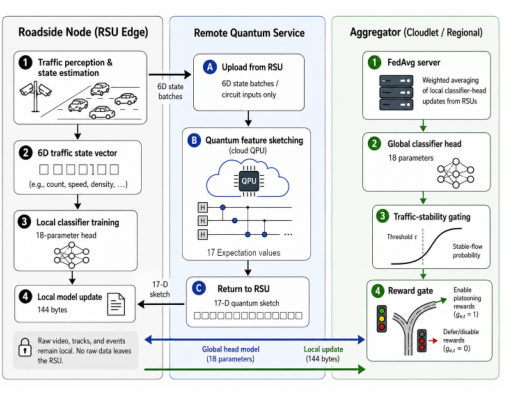
<figcaption class="paper-figure-caption"><b>Fig 2.</b> Fig. 1 summarizes the computational and communication boundaries of FedQML-Edge. Each RSU performs the clas- sical roadside operations: traffic perception, construction and normalization of the six-dimensional traffic-state vector, local classifier training, and generation of the federated model up- date. Raw frames, vehicle trajectories, per-vehicle identifiers, and local event records remain at the RSU. Quantum feature extraction is performed by remote quan- tum hardware. For each local traffic-state sample, the RSU transmits the six normalized circuit inputs to the quantum service. The service prepares the fixed six-qubit feature-map circuit, measures the required Pauli observables, and...</figcaption>
</figure>
<figure class="paper-figure-card">
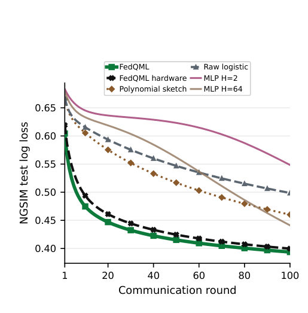
<figcaption class="paper-figure-caption"><b>Fig 3.</b> Fig. 2. NGSIM loss curves over 100 communication rounds. FedQML is shown for both statevector and IBM Fez hardware-derived sketches; the remaining curves show the strongest matched classical sketch, raw logistic regression, payload-matched H = 2 MLP, and the strongest MLP.</figcaption>
</figure>
<figure class="paper-figure-card">
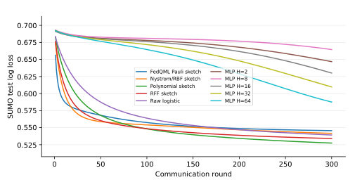
<figcaption class="paper-figure-caption"><b>Fig 4.</b> Fig. 3. SUMO predictive-gating test log-loss histories over 300 communica- tion rounds. The compact fixed-sketch models improve early and then flatten, while larger MLPs continue late-round optimization with larger updates.</figcaption>
</figure>
<figure class="paper-figure-card">
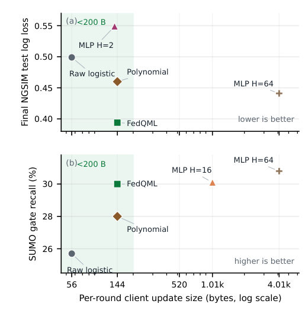
<figcaption class="paper-figure-caption"><b>Fig 5.</b> Fig. 4. Communication–performance tradeoffs. (a) Final NGSIM test log loss versus per-round client update size. (b) SUMO stable-window recall under the validation-selected false-enable constraint versus update size. FedQML gives the lowest NGSIM loss and approaches the SUMO gate recall of substantially larger MLPs with a 144-byte update.</figcaption>
</figure>
</div>
<p><strong>Summary.</strong> This paper introduces FedQML-Edge, a federated learning framework that uses compact quantum feature sketches to process raw traffic data from roadside units (RSUs). By transmitting only small classifier updates derived from these quantum sketches, the method drastically reduces communication bandwidth requirements while maintaining high accuracy for critical tasks like predicting stable traffic flow.</p>
<p><strong>Why it may be interesting.</strong> The integration of quantum sketching into a practical, communication-constrained edge AI task like traffic management is novel. It demonstrates how quantum principles can solve real-world data transmission bottlenecks in physical systems.</p>
<details>
<summary>Detailed structure</summary>
<p><strong>Main problem.</strong> Developing a compact, privacy-preserving learning method for roadside units (RSUs) to determine traffic stability in connected autonomous vehicle corridors under bandwidth constraints.</p>
<p><strong>Main result.</strong> The proposed method significantly reduces communication overhead while maintaining high predictive accuracy, achieving state-of-the-art performance compared to large classical MLPs on both NGSIM and SUMO benchmarks.</p>
<p><strong>Method.</strong> It employs a federated quantum feature-sketching pipeline where raw traffic data is mapped into a compact Pauli expectation value sketch using a fixed quantum circuit. This sketch then feeds a locally trained logistic classifier, with only the small classifier update being shared during federated averaging.</p>
<p><strong>Model / system.</strong> The system involves RSUs observing six key traffic features (e.g., vehicle count, mean speed) and sending inputs to a remote quantum service for sketch generation. The learning process is decentralized (Federated Learning), using the sketch as a low-dimensional feature representation for classification.</p>
<p><strong>Key observables.</strong> Test log loss, Gate Recall, Update Payload Size (bytes), Pauli expectation values ($\mathbf{x}_{e,t}$)</p>
<p><strong>Important parameters / regimes.</strong> The size of the classifier update (144 bytes) is constant and independent of traffic volume; the sketch dimension is 17.</p>
<p><strong>Assumptions / limitations.</strong> The method assumes that a fixed quantum feature map can provide sufficient non-linearity for classification while keeping communication updates minimal. Raw observations remain private at the RSU.</p>
<p><strong>Figures summary.</strong> Figures illustrate the computation and communication workflow (RSU $
ightarrow$ Quantum Service $
ightarrow$ RSU $
ightarrow$ Aggregator) and show loss curves comparing FedQML to classical baselines over training rounds on NGSIM/SUMO.</p>
<p><strong>Paper structure.</strong> The paper details the problem setup in CAVs, introduces the FedQML-Edge methodology (sketching via Pauli expectations), presents performance evaluations using both NGSIM and SUMO datasets, compares results against various classical feature sets and MLPs, and discusses hardware feasibility on IBM Fez.</p>
</details>
<details>
<summary>Abstract</summary>
<p>Roadside units (RSUs) supporting connected and autonomous vehicle corridors need compact models to decide when cooperative maneuvers should be rewarded, deferred, or disabled. Raw sensor streams and neural network weight checkpoints are poorly suited to bandwidth-limited, privacy-sensitive roadside learning. This paper presents $\texttt{FedQML-Edge}$, a federated quantum feature-sketching pipeline for traffic-stability gating. Each RSU constructs a traffic-state summary and sends circuit inputs to a quantum computer; Pauli expectations form a nonlinear sketch processed by a logistic classifier. Only classifier updates are shared with an aggregator, whose head supports reward gating. Raw observations, vehicle records, event traces, and quantum sketches remain private. We evaluate the method using NGSIM trajectories, SUMO predictive gating with sensing noise, and IBM Quantum hardware. On NGSIM, the Pauli sketch reduces test log loss by $14.4\%$ relative to the strongest matched classical sketch. On SUMO, it approaches larger MLPs in stable-window recall while using $7-28$ times less communication per round.</p>
</details>
<p><sub><a href="#top">↑ back to top</a></sub></p>

<p><a id="paper-2607.28811"></a></p>
<h3 id="free-to-interacting-map-for-crystalline-spt-phases-equivariance-vs-crystalline-equivalence"><a href="http://arxiv.org/abs/2607.28811v1">Free to Interacting Map for Crystalline SPT Phases: Equivariance vs Crystalline Equivalence</a></h3>
<p><strong>Authors:</strong> Daniel Sheinbaum, Omar Antolín-Camarena<br>
<strong>Type:</strong> theory · <strong>Category:</strong> other · <strong>PDF:</strong> <a href="https://arxiv.org/pdf/2607.28811v1">https://arxiv.org/pdf/2607.28811v1</a><br>
<strong>Analysis basis:</strong> full PDF text, analyzed in chunks</p>
<div class="figure-strip-hint">↔ Scroll figures horizontally</div>
<div class="paper-figures-scroll">
<figure class="paper-figure-card">
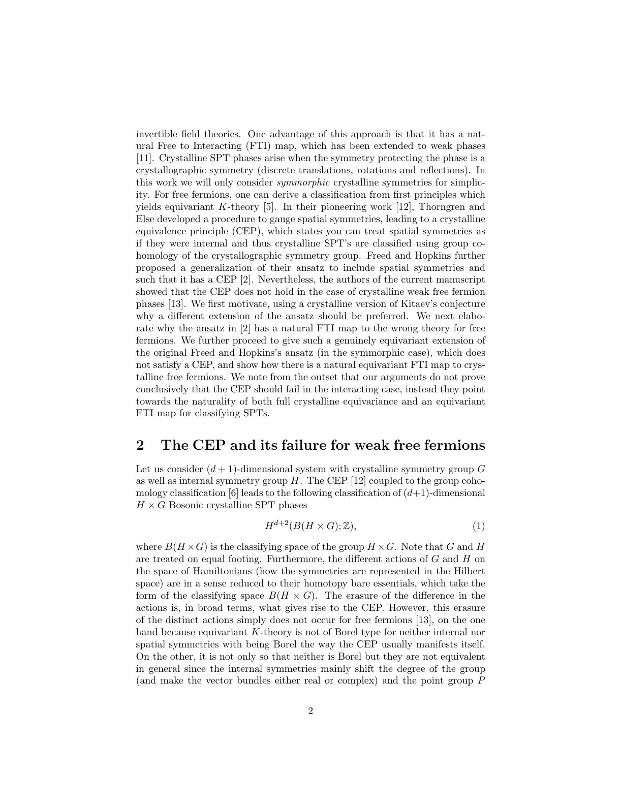
<figcaption class="paper-figure-caption"><b>Fig 1.</b> Low-resolution page preview, page 2</figcaption>
</figure>
<figure class="paper-figure-card">

<figcaption class="paper-figure-caption"><b>Fig 2.</b> Low-resolution page preview, page 3</figcaption>
</figure>
<figure class="paper-figure-card">
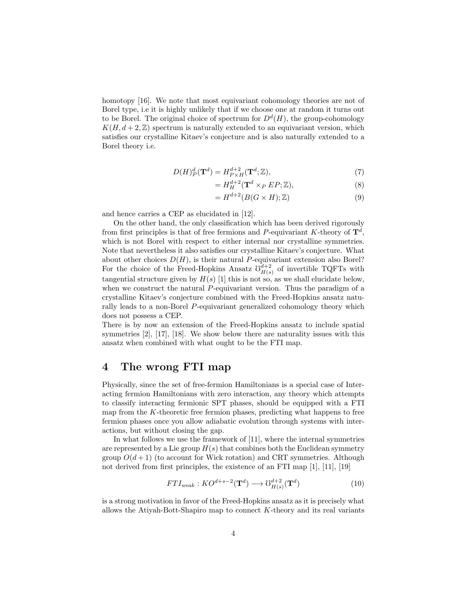
<figcaption class="paper-figure-caption"><b>Fig 3.</b> Low-resolution page preview, page 4</figcaption>
</figure>
<figure class="paper-figure-card">
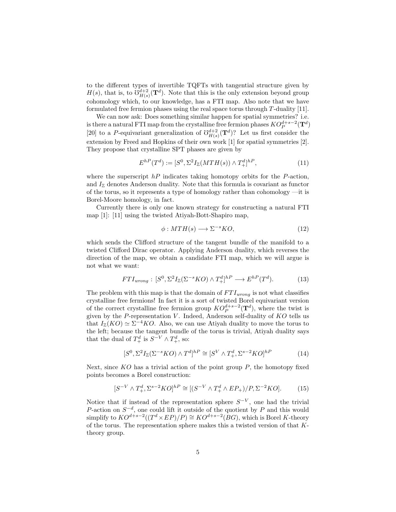
<figcaption class="paper-figure-caption"><b>Fig 4.</b> Low-resolution page preview, page 5</figcaption>
</figure>
<figure class="paper-figure-card">
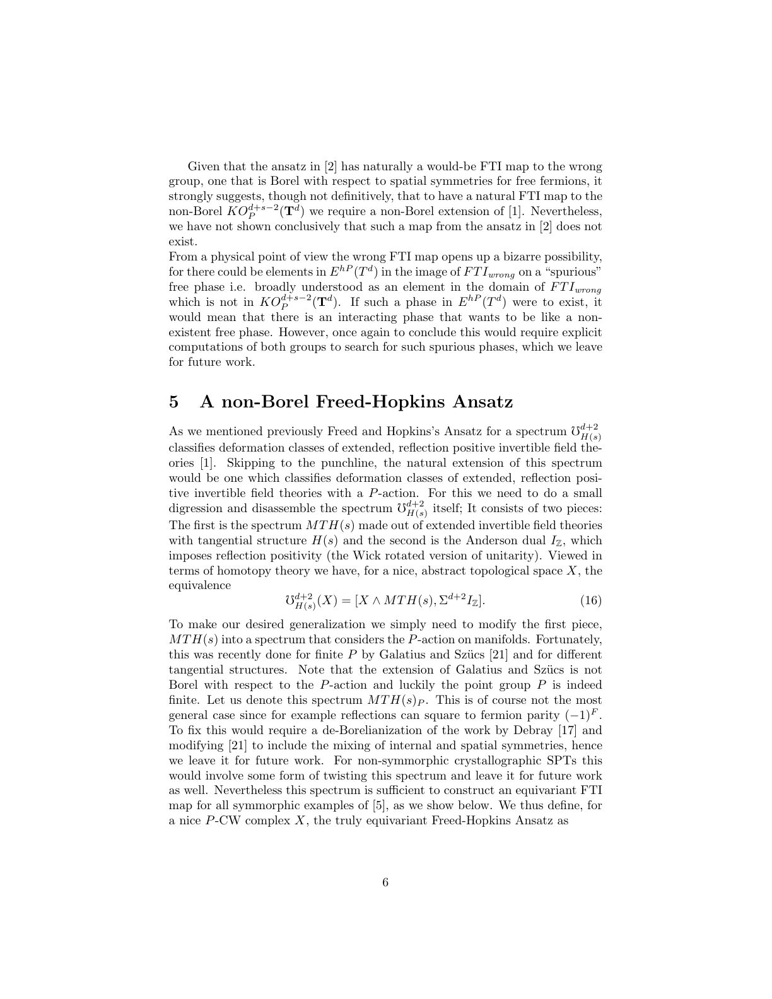
<figcaption class="paper-figure-caption"><b>Fig 5.</b> Low-resolution page preview, page 6</figcaption>
</figure>
</div>
<p><strong>Summary.</strong> This theoretical paper develops a rigorous framework to classify interacting Symmetry Protected Topological (SPT) phases in crystalline systems. It proposes an equivariant Free to Interacting (FTI) map that corrects previous classification schemes by prioritizing full crystallographic equivariance over the established Crystalline Equivalence Principle. This advances our understanding of topological order in materials with crystal symmetries.</p>
<p><strong>Why it may be interesting.</strong> This work provides deep mathematical machinery (equivariant K-theory) to classify topological phases in crystalline materials, which is crucial for understanding symmetry protection beyond simple lattice models relevant to AMO physics.</p>
<details>
<summary>Detailed structure</summary>
<p><strong>Main problem.</strong> The paper addresses developing a natural classification scheme for interacting Symmetry Protected Topological (SPT) phases, specifically resolving the conflict between established crystalline equivalence principles and results derived from free fermions.</p>
<p><strong>Main result.</strong> The authors propose a fully equivariant Free to Interacting (FTI) map that respects full crystallographic equivariance, arguing this structure is more natural than previous constructions based on the potentially flawed Crystalline Equivalence Principle (CEP).</p>
<p><strong>Method.</strong> The work employs advanced algebraic topology tools, including equivariant K-theory and Anderson duality, to construct and analyze a candidate FTI map connecting free fermion theories to interacting SPT phases.</p>
<p><strong>Model / system.</strong> The focus is on crystalline SPT phases characterized by an internal symmetry group H and a crystallographic symmetry group G. The analysis compares classifications derived from invertible field theories against those arising from weak free fermions.</p>
<p><strong>Key observables.</strong> Classification invariants such as $\pi_0(	ext{Sd}(H))$ for interacting phases, and $KO^{d+s-2}_P(T^d)$ for free fermions; the kernel and cokernel of the proposed FTI map are key diagnostics.</p>
<p><strong>Important parameters / regimes.</strong> The dimensionality ($d$), internal symmetry structure ($H$), and crystallographic point group action ($P$) are central parameters governing the classification.</p>
<p><strong>Assumptions / limitations.</strong> The primary assumption is that full equivariance with respect to the spatial symmetry group $P$ should take precedence over maintaining the Crystalline Equivalence Principle (CEP).</p>
<p><strong>Paper structure.</strong> The paper proceeds by first identifying the failure of the CEP for free fermions, then generalizing the Freed and Hopkins ansatz to a fully equivariant version, and finally constructing and analyzing the resulting natural equivariant FTI map.</p>
</details>
<details>
<summary>Abstract</summary>
<p>Freed and Hopkins developed an ansatz for classifying interacting SPT phases using invertible field theories with a natural Free to Interacting (FTI) map from free fermion phases. This ansatz has been generalized to include crystalline phases and a crystalline equivalence principle (CEP). However, motivated by failure of the CEP for weak free fermions and the FTI, here we generalize the original Freed and Hopkins ansatz to a fully equivariant version for symmorphic crystallographic symmetries and show there is a natural equivariant FTI map from symmorphic crystalline weak free fermions. We further discuss why this equivariant ansatz is both mathematically and physically more natural than the spatial symmetry extension by Freed and Hopkins and why full equivariance should hold over the CEP.</p>
</details>
<p><sub><a href="#top">↑ back to top</a></sub></p>

<p><a id="paper-2607.29134"></a></p>
<h3 id="inferq-a-database-oriented-benchmark-for-quantum-circuits-simulation"><a href="http://arxiv.org/abs/2607.29134v1">InferQ: A Database-Oriented Benchmark for Quantum Circuits Simulation</a></h3>
<p><strong>Authors:</strong> Andrei Ilinescu, Aadi Patwardhan, Rihan Hai<br>
<strong>Type:</strong> both · <strong>Category:</strong> quantum information and computing · <strong>PDF:</strong> <a href="https://arxiv.org/pdf/2607.29134v1">https://arxiv.org/pdf/2607.29134v1</a><br>
<strong>Analysis basis:</strong> full PDF text, analyzed in chunks</p>
<div class="figure-strip-hint">↔ Scroll figures horizontally</div>
<div class="paper-figures-scroll">
<figure class="paper-figure-card">
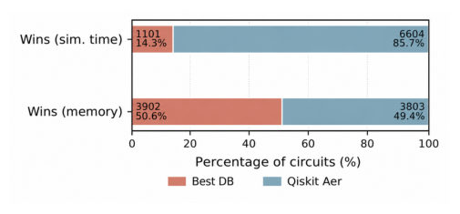
<figcaption class="paper-figure-caption"><b>Fig 1.</b> Figure 1: Across 7,705 circuits, share of cases where RDBMSs (executing the emitted SQL workload) or Qiskit Aer achieves the lowest runtime and the lowest peak memory. Detailed experimental settings are in Section 6.</figcaption>
</figure>
<figure class="paper-figure-card">
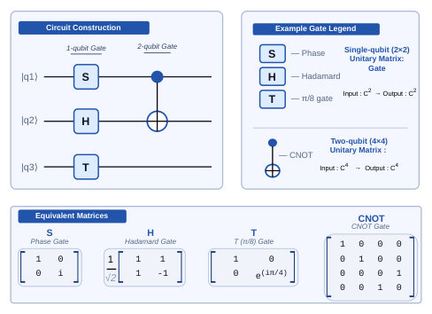
<figcaption class="paper-figure-caption"><b>Fig 2.</b> Figure 2: Quantum gates represented as matrices.</figcaption>
</figure>
<figure class="paper-figure-card">
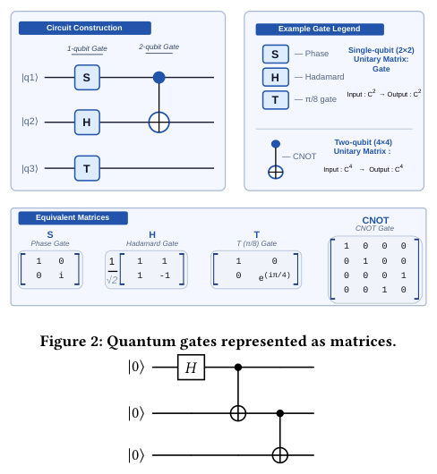
<figcaption class="paper-figure-caption"><b>Fig 3.</b> Figure 3: GHZ state preparation circuit: it takes the all-zero state |000⟩as input and prepares a maximally entangled state.</figcaption>
</figure>
<figure class="paper-figure-card">

<figcaption class="paper-figure-caption"><b>Fig 4.</b> Figure 5: InferQ feature extraction workflow. Static, graph- based, and SQL-derived features are extracted prior to simu- lation, whereas dynamic features can only be obtained after the simulation completes.</figcaption>
</figure>
<figure class="paper-figure-card">
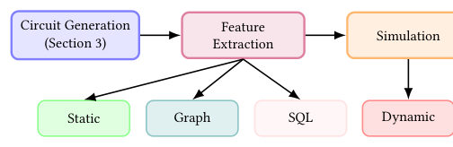
<figcaption class="paper-figure-caption"><b>Fig 5.</b> Figure 4 illustrates one end-to-end circuit instance generated by InferQ. The workflow is intentionally analogous to a database benchmark that (i) samples a scale/configuration, (ii) instantiates a small sequence of templates with parameters, and (iii) materializes both an artifact and its metadata. Step 1 (Hyper-Parameters). Given a user seed, InferQ sam- ples an instance configuration (𝑛𝑞,𝑑,𝑘,𝑟, 𝜉). In this example, 𝑛𝑞=7 qubits, depth 𝑑=80, evaluation 𝑘=4, and repetition count 𝑟=1. Step 2–3 (Template selection &amp; subcircuits generation ). Starting from START, InferQ samples a short template sequence using the history-dependent distribution. Here the sequence is QFT →QPE. Each template is...</figcaption>
</figure>
</div>
<p><strong>Summary.</strong> This paper introduces InferQ, a comprehensive benchmark designed to test quantum circuit simulation by translating computations into SQL workloads executable on RDBMSs. It systematically generates diverse circuits and extracts rich features, demonstrating that database engines can offer competitive performance metrics like memory usage compared to standard simulators. This work opens the door for data-centric optimization of quantum algorithms by predicting the best execution backend.</p>
<p><strong>Why it may be interesting.</strong> While focused on database performance, the systematic benchmarking of quantum circuits provides a novel computational resource analysis framework that could inform hardware-aware algorithm design or compiler optimization for future quantum computing architectures.</p>
<details>
<summary>Detailed structure</summary>
<p><strong>Main problem.</strong> The authors developed a systematic benchmark, InferQ, to evaluate quantum circuit simulation performance when executed using Relational Database Management Systems (RDBMSs) compared to standard simulators.</p>
<p><strong>Main result.</strong> InferQ demonstrated that RDBMSs can achieve better peak memory usage than Qiskit Aer on over 50% of tested circuits, and machine learning models trained on its features can accurately predict the optimal simulation engine.</p>
<p><strong>Method.</strong> The method involves generating general, compositional quantum circuits, translating each simulation task into an RDBMS-ready SQL workload (tensor contractions), and extracting comprehensive static, graph, and SQL features for analysis.</p>
<p><strong>Model / system.</strong> The system under study is the quantum circuit model, where states are represented by complex vectors. The computation is simulated either via standard quantum simulators or by compiling the operations into join-and-aggregate tensor contractions executed within an RDBMS.</p>
<p><strong>Key observables.</strong> Peak memory usage, execution runtime, classification accuracy (for predicting optimal backend), and various circuit/SQL features (e.g., graph diameter, number of JOINs).</p>
<p><strong>Important parameters / regimes.</strong> The benchmark covers a large dataset of 202,975 circuits generated by composing subcircuits from templates.</p>
<p><strong>Assumptions / limitations.</strong> The primary assumption is that quantum circuit simulation can be systematically mapped onto SQL workloads suitable for database analysis. The ML predictions rely on the completeness and diversity of the extracted features.</p>
<p><strong>Figures summary.</strong> Figures illustrate feature distributions (static, graph, SQL), performance comparisons between RDBMSs and Qiskit Aer, and machine learning model performance metrics showing high prediction accuracy.</p>
<p><strong>Paper structure.</strong> The paper introduces InferQ to address the lack of systematic benchmarks. It details circuit generation via template composition, workload extraction into SQL, feature engineering (static/graph/SQL), comparative experiments across multiple RDBMSs vs. Qiskit Aer, and finally, using ML models to predict optimal execution backends.</p>
</details>
<details>
<summary>Abstract</summary>
<p>Recent work suggests that relational database management systems (RDBMSs) can execute quantum circuit simulation by compiling the simulation into SQL workloads (primarily join-and-aggregate tensor contractions). While early results are promising, they largely focus on a narrow set of highly structured circuits and offer limited support for systematic database research, such as query optimization, physical design, and engine-level evaluation across a broad range of circuits. We present InferQ, a database-oriented benchmark for quantum circuit simulation. InferQ generates general, compositional circuits by assembling subcircuits from a set of circuit templates, emits each simulation task as an RDBMS-ready SQL workload, and extracts circuit and query features (static, graph, SQL, and dynamic) for workload characterization. InferQ also releases a large dataset of 202,975 circuits online, with a web-based viewer to support searching, filtering, and downloading circuits and feature records. In experiments across RDBMS engines (PostgreSQL, SQLite, DuckDB, and Umbra) and the widely used Qiskit Aer simulator, we find that RDBMSs achieve better peak memory usage than Qiskit Aer on more than 50% of the circuits generated by InferQ. Moreover, using InferQ features, lightweight machine learning models (linear and tree-based models) can accurately predict when SQL execution is preferable (with accuracy up to 95.3% for runtime and 97.4% for memory), enabling data-centric simulator selection and opening the door to principled optimization of SQL-based quantum circuit simulation.</p>
</details>
<p><sub><a href="#top">↑ back to top</a></sub></p>

<p><a id="paper-2607.29453"></a></p>
<h3 id="quantum-algorithms-for-modular-factorials"><a href="http://arxiv.org/abs/2607.29453v1">Quantum Algorithms for Modular Factorials</a></h3>
<p><strong>Authors:</strong> Yann Tal<br>
<strong>Type:</strong> theory · <strong>Category:</strong> quantum information and computing · <strong>PDF:</strong> <a href="https://arxiv.org/pdf/2607.29453v1">https://arxiv.org/pdf/2607.29453v1</a><br>
<strong>Analysis basis:</strong> full PDF text, analyzed in chunks</p>
<div class="figure-strip-hint">↔ Scroll figures horizontally</div>
<div class="paper-figures-scroll">
<figure class="paper-figure-card">
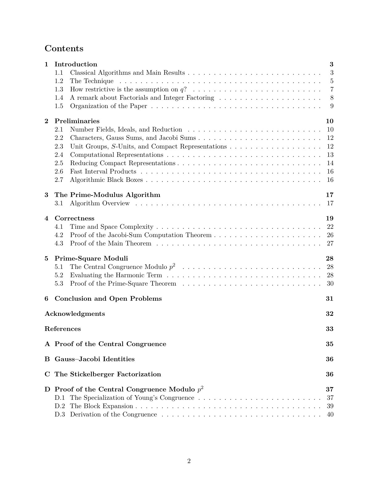
<figcaption class="paper-figure-caption"><b>Fig 1.</b> Low-resolution page preview, page 2</figcaption>
</figure>
<figure class="paper-figure-card">
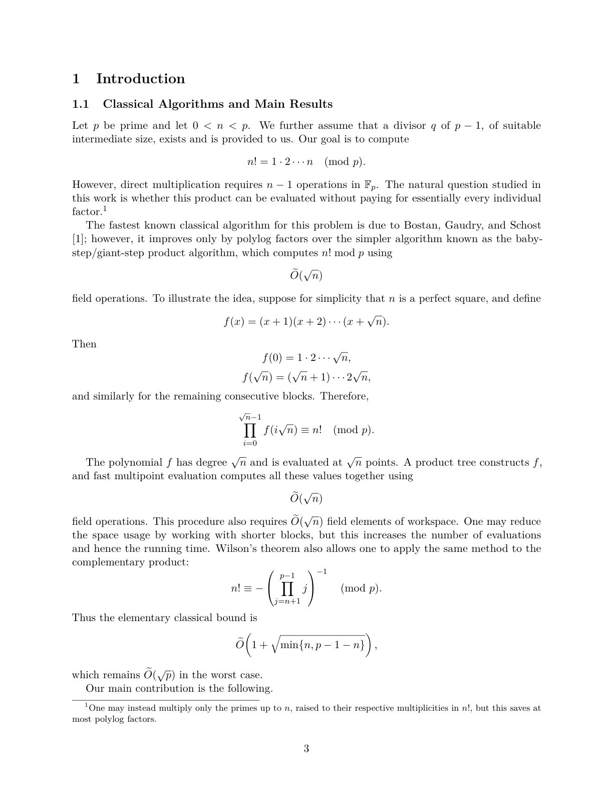
<figcaption class="paper-figure-caption"><b>Fig 2.</b> Low-resolution page preview, page 3</figcaption>
</figure>
<figure class="paper-figure-card">
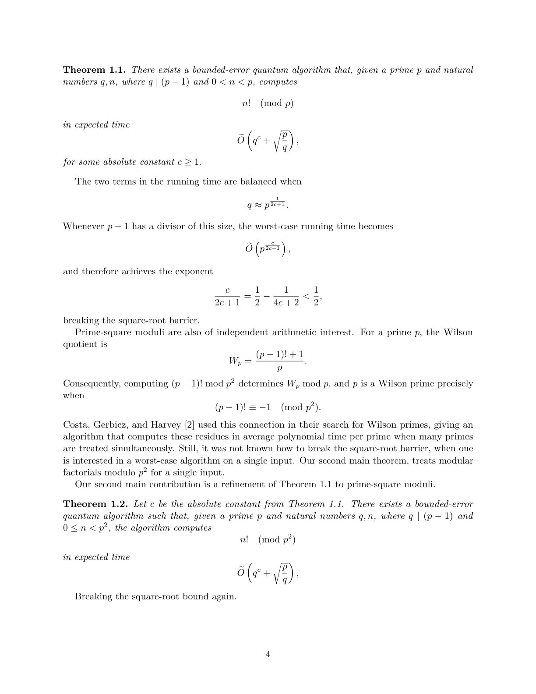
<figcaption class="paper-figure-caption"><b>Fig 3.</b> Low-resolution page preview, page 4</figcaption>
</figure>
<figure class="paper-figure-card">
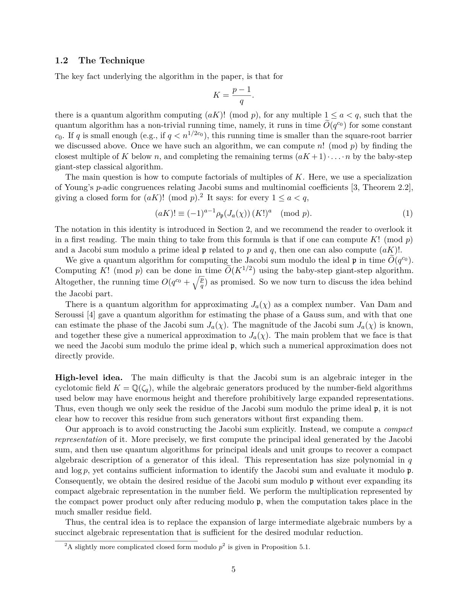
<figcaption class="paper-figure-caption"><b>Fig 4.</b> Low-resolution page preview, page 5</figcaption>
</figure>
<figure class="paper-figure-card">
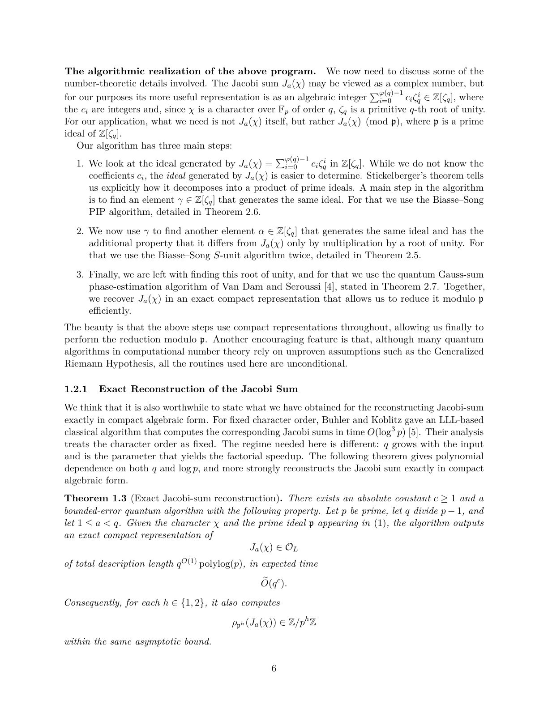
<figcaption class="paper-figure-caption"><b>Fig 5.</b> Low-resolution page preview, page 6</figcaption>
</figure>
</div>
<p><strong>Summary.</strong> This paper presents a novel bounded-error quantum algorithm to compute modular factorials, $n! \pmod{p}$ and $\pmod{p^2}$, with an expected time complexity that surpasses classical limits under certain conditions. The breakthrough relies on developing a quantum method to exactly reconstruct complex algebraic objects, specifically Jacobi sums, in a compact form suitable for computation modulo prime ideals.</p>
<p><strong>Why it may be interesting.</strong> While not directly about physical Hamiltonians, the development of quantum algorithms for fundamental number-theoretic problems like modular factorials demonstrates the potential reach of quantum computation beyond chemistry or materials science. The techniques used to handle exponentially large algebraic numbers are highly relevant to theoretical quantum information processing.</p>
<details>
<summary>Detailed structure</summary>
<p><strong>Main problem.</strong> The primary goal is developing an efficient quantum algorithm to compute modular factorials, specifically $n! \pmod{p}$ and $n! \pmod{p^2}$, for a prime $p$. A secondary technical challenge involves reconstructing Jacobi sums modulo prime ideals.</p>
<p><strong>Main result.</strong> The authors present a bounded-error quantum algorithm achieving an expected time complexity of $\widetilde{O}(q\sqrt{c} + p/q)$ for computing $n! \pmod{p}$, which breaks the classical square-root barrier under specific divisor conditions. This technique is extended to compute factorials modulo $p^2$.</p>
<p><strong>Method.</strong> The core method involves using quantum algorithms to reconstruct Jacobi sums in a compact algebraic form, circumventing the need for explicit construction due to their potentially enormous size. The overall computation combines this specialized number-theoretic subroutine with techniques derived from Young's congruences and multinomial coefficient identities.</p>
<p><strong>Model / system.</strong> The paper is purely theoretical, dealing with computational complexity bounds applied to number theory problems involving modular arithmetic over finite fields $\mathbb{F}_p$ and rings $\mathbb{Z}/p^2\mathbb{Z}$. The 'system' is the mathematical structure of prime moduli and associated character sums.</p>
<p><strong>Key observables.</strong> The primary observables are the values $n! \pmod{p}$ and $n! \pmod{p^2}$, alongside intermediate quantities like Jacobi sums $J_a(\chi)$ and ratios of multinomial coefficients.</p>
<p><strong>Important parameters / regimes.</strong> Key parameters include the prime modulus $p$, a divisor $q$ of $p-1$, and the integer $n$. The complexity depends critically on balancing terms involving $q$ and $p/q$.</p>
<p><strong>Assumptions / limitations.</strong> The algorithm relies on the existence of a suitable divisor $q | (p-1)$ to achieve its stated time bounds. Furthermore, several quantum routines used (e.g., for ideal generation) are assumed to function correctly.</p>
<p><strong>Paper structure.</strong> The paper builds from the general problem of modular factorials to the technical core: reconstructing Jacobi sums using a three-step quantum process involving PIP and S-unit algorithms. It then applies this machinery, leveraging number theory congruences (like those relating multinomial coefficients to Jacobi sums), to derive the final complexity bounds for $n! \pmod{p}$ and $n! \pmod{p^2}$.</p>
</details>
<details>
<summary>Abstract</summary>
<p>We give a bounded-error quantum algorithm that, given a prime $p$, a divisor $q\mid(p-1)$, and an integer $0<n<p$, computes $n!\bmod p$ in expected time $\widetilde{O}(q^c+\sqrt{p/q})$ for some absolute constant $c\ge 1$. When $p-1$ has a divisor of size $q\approx p^{1/(2c+1)}$, this gives the exponent $c/(2c+1)<1/2$. To our knowledge, this is the first algorithm to break the exponent $1/2$ barrier for modular factorials under such a divisor promise. The main technical ingredient is a quantum algorithm that reconstructs the relevant Jacobi sum exactly in compact algebraic form, with polynomial dependence on $q$ and $\log p$. We further extend the same asymptotic bound to the computation of $n!\bmod p^2$, uniformly over $0\le n<p^2$. At $n=p-1$, this determines the Wilson quotient $\frac{(p-1)!+1}{p}\pmod p$. We conjecture that the condition $q\mid(p-1)$ is a technical limitation of the present method rather than an inherent obstruction, and that a uniform quantum algorithm exists for all primes.</p>
</details>
<p><sub><a href="#top">↑ back to top</a></sub></p>

<p><a id="paper-2607.29672"></a></p>
<h3 id="the-kikuchi-hierarchy-is-sharp-for-math867mathxor"><a href="http://arxiv.org/abs/2607.29672v1">The Kikuchi Hierarchy is Sharp for $k$XOR</a></h3>
<p><strong>Authors:</strong> Alexander Schmidhuber, Matthew B. Hastings<br>
<strong>Type:</strong> theory · <strong>Category:</strong> other · <strong>PDF:</strong> <a href="https://arxiv.org/pdf/2607.29672v1">https://arxiv.org/pdf/2607.29672v1</a><br>
<strong>Analysis basis:</strong> full PDF text, analyzed in chunks</p>
<div class="figure-strip-hint">↔ Scroll figures horizontally</div>
<div class="paper-figures-scroll">
<figure class="paper-figure-card">
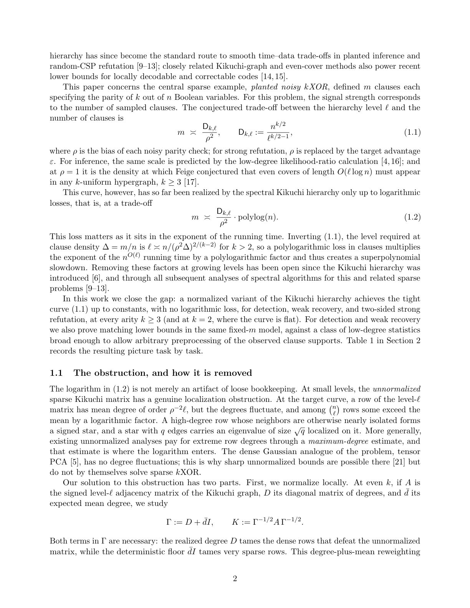
<figcaption class="paper-figure-caption"><b>Fig 1.</b> Low-resolution page preview, page 2</figcaption>
</figure>
<figure class="paper-figure-card">
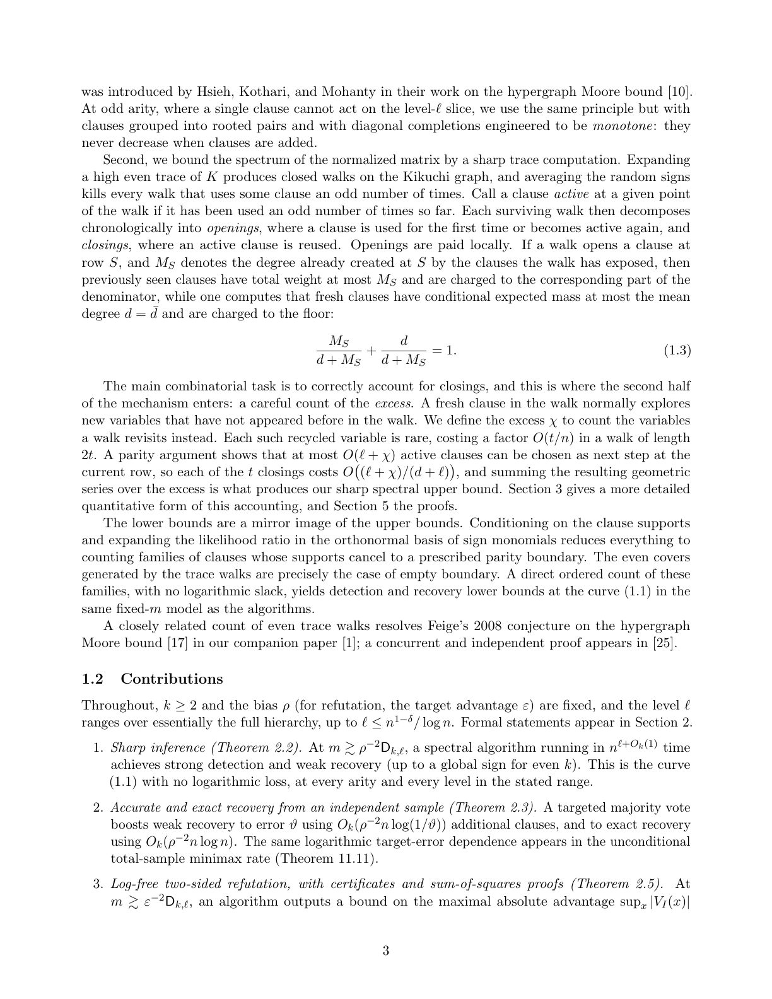
<figcaption class="paper-figure-caption"><b>Fig 2.</b> Low-resolution page preview, page 3</figcaption>
</figure>
<figure class="paper-figure-card">
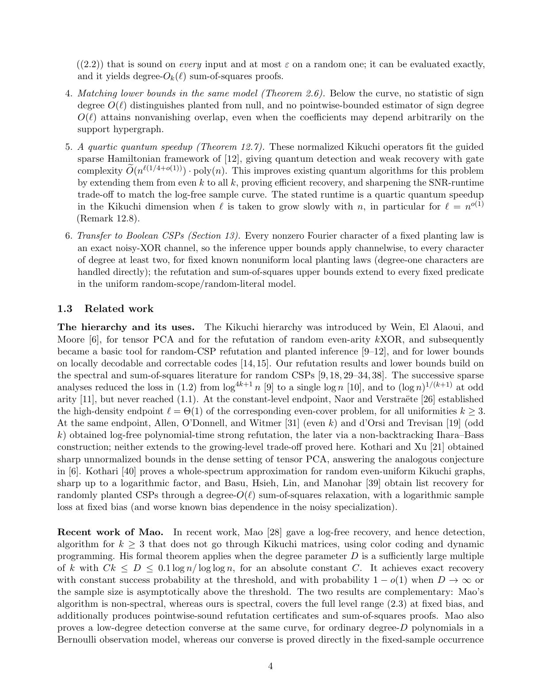
<figcaption class="paper-figure-caption"><b>Fig 3.</b> Low-resolution page preview, page 4</figcaption>
</figure>
<figure class="paper-figure-card">
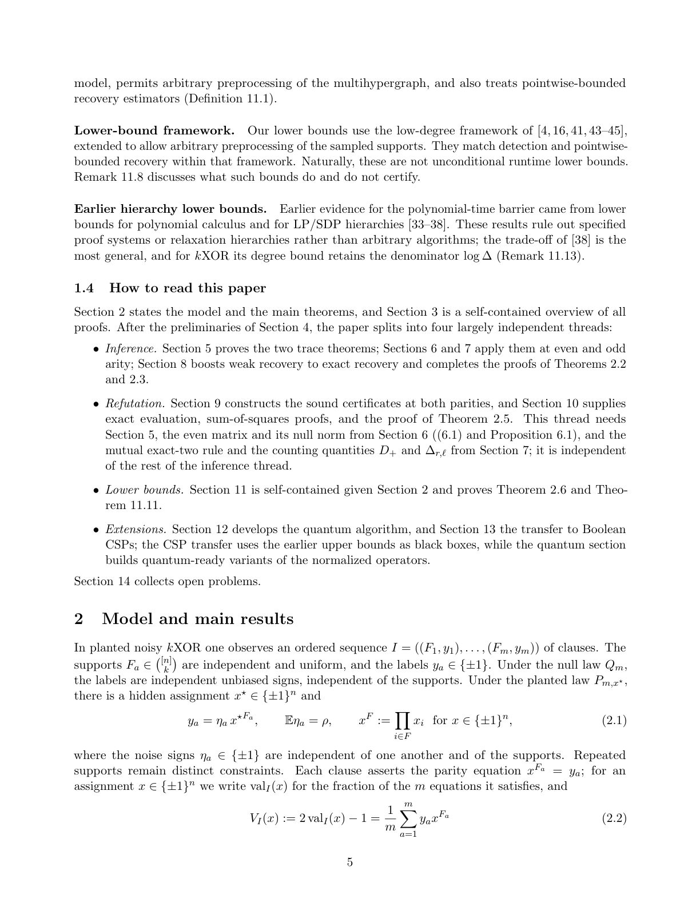
<figcaption class="paper-figure-caption"><b>Fig 4.</b> Low-resolution page preview, page 5</figcaption>
</figure>
<figure class="paper-figure-card">
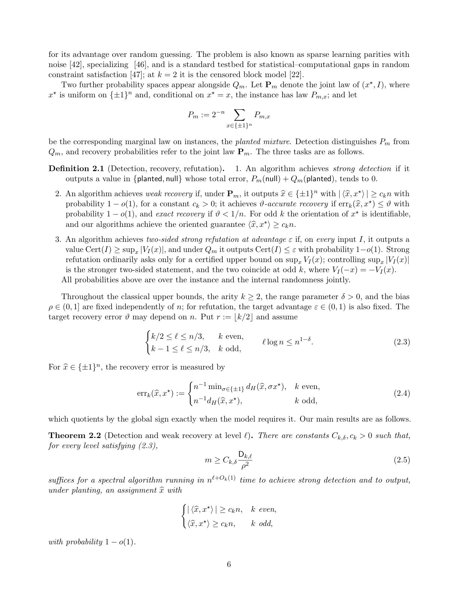
<figcaption class="paper-figure-caption"><b>Fig 5.</b> Low-resolution page preview, page 6</figcaption>
</figure>
</div>
<p><strong>Summary.</strong> This theoretical paper establishes optimal sample complexity bounds for solving planted inference problems within noisy kXOR models. By introducing a normalized version of the Kikuchi hierarchy, the authors prove that previously conjectured sharp trade-offs are achievable without logarithmic losses. The work also provides a quantum algorithm demonstrating a significant speedup over classical spectral methods.</p>
<p><strong>Why it may be interesting.</strong> While highly mathematical and rooted in coding theory/ML, the rigorous establishment of sharp information-theoretic bounds (like those governing signal detection) is foundational to understanding complexity limits in physical systems modeled by random constraints.</p>
<details>
<summary>Detailed structure</summary>
<p><strong>Main problem.</strong> The paper addresses establishing sharp theoretical bounds for planted inference problems, specifically detecting or recovering a hidden low-rank signal within noisy $k$XOR constraints.</p>
<p><strong>Main result.</strong> They prove that a normalized variant of the Kikuchi hierarchy achieves the conjectured optimal trade-off between signal strength and sample size with no logarithmic loss for detection, weak recovery, and strong refutation.</p>
<p><strong>Method.</strong> The core methods involve spectral analysis using the normalized sparse Kikuchi matrix, sharp counting of closed walks in its trace expansion, and establishing matching lower bounds via low-degree polynomial techniques.</p>
<p><strong>Model / system.</strong> The model is planted noisy $k$XOR, where constraints are defined by clauses specifying the parity of $k$ out of $n$ Boolean variables. The analysis extends to general fixed predicates and local planting laws.</p>
<p><strong>Key observables.</strong> Signal strength ($
ho$), Hierarchy Level ($\ell$), Number of Clauses ($m$), Detection/Recovery accuracy, Refutation certificate degree.</p>
<p><strong>Important parameters / regimes.</strong> Arity $k \ge 3$, Bias $
ho$, Level $\ell$, Sample size $m$.</p>
<p><strong>Assumptions / limitations.</strong> The main improvement over prior work is the normalization technique used to overcome polylogarithmic losses in spectral analyses, allowing matching of the conjectured sharp trade-off curve.</p>
<p><strong>Paper structure.</strong> The paper builds upon establishing the theoretical framework using the Kikuchi hierarchy and then presents results for detection, weak recovery, and strong refutation, culminating in a quantum algorithm achieving a quartic speedup.</p>
</details>
<details>
<summary>Abstract</summary>
<p>Planted noisy $k$XOR and the strong refutation of random $k$XOR are governed by a conjectured trade-off between signal strength and time: Level $\ell$ of the Kikuchi hierarchy should achieve the smooth curve \begin{equation<em>}   m\ \gtrsim\ ρ^{-2}n^{k/2}/\ell^{k/2-1}\ \text{clauses}   \quad\Longleftrightarrow\quad   \text{solvable in time }n^{O(\ell)}, \end{equation</em>} where $ρ$ is the bias of the planted signal or, for refutation, the target advantage. However, every spectral analysis of sparse $k$XOR to date loses polylogarithmic factors against this curve, a loss that enters the exponent of the running time.   We show that a normalized variant of the Kikuchi hierarchy achieves the sharp conjectured trade-off, with no logarithmic loss, at every arity $k\ge3$. At the scale above, our algorithms achieve strong detection, weak recovery, and strong refutation; an additional cleanup step boosts weak recovery to exact recovery, and the refutation certificates yield sum-of-squares proofs of degree $O_k(\ell)$. We also prove matching lower bounds in the same model. The inference and refutation upper bounds transfer to more general planting laws and predicates. Finally, we give a quantum algorithm that achieves a quartic speedup over the classical spectral algorithms for detection and weak recovery.   The proofs rest on two key ingredients: a normalization of the sparse Kikuchi matrix, and a sharp count of the closed walks in its trace expansion. We use a closely related trace-walk count to prove Feige's 2008 hypergraph Moore bound conjecture in a companion paper.</p>
</details>
<p><sub><a href="#top">↑ back to top</a></sub></p>

<p><a id="paper-2607.29186"></a></p>
<h3 id="towards-the-characterization-of-logical-errors-in-distributed-lattice-surgery"><a href="http://arxiv.org/abs/2607.29186v1">Towards the Characterization of Logical Errors in Distributed Lattice Surgery</a></h3>
<p><strong>Authors:</strong> Nitish Kumar Chandra, Reza Nejabati, Eneet Kaur<br>
<strong>Type:</strong> theory · <strong>Category:</strong> quantum information and computing · <strong>PDF:</strong> <a href="https://arxiv.org/pdf/2607.29186v1">https://arxiv.org/pdf/2607.29186v1</a><br>
<strong>Analysis basis:</strong> full PDF text, analyzed in chunks</p>
<div class="figure-strip-hint">↔ Scroll figures horizontally</div>
<div class="paper-figures-scroll">
<figure class="paper-figure-card">
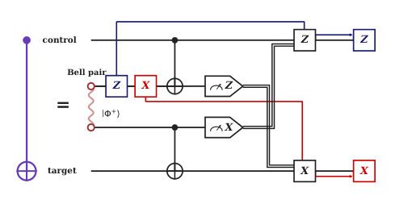
<figcaption class="paper-figure-caption"><b>Fig 1.</b> Fig. 2. Entanglement-assisted nonlocal CNOT gate. A shared Bell pair is used to mediate the interaction between spatially separated control and target qubits, followed by local CNOTs, measurements, and classical feedforward for Pauli corrections.</figcaption>
</figure>
<figure class="paper-figure-card">
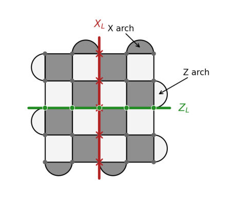
<figcaption class="paper-figure-caption"><b>Fig 2.</b> Fig. 1. Rotated Surface Code for 𝑑= 5. The gray (𝑋-type) and white (𝑍-) squares represent the plaquettes (stabilizer generators) of the code. Data qubits are located at the vertices (grey circles). The vertical line indicates the logical X operator (𝑋𝐿), and the horizontal line indicates the logical Z operator (𝑍𝐿). The X and Z arches, indicated by arrows, represent the stabilizers at the boundary. We use red for 𝑋𝐿and Green 𝑍𝐿to represent the logical operators.</figcaption>
</figure>
<figure class="paper-figure-card">

<figcaption class="paper-figure-caption"><b>Fig 3.</b> Fig. 3. Lattice surgery circuit for a logical CNOT gate. The control (|𝐶⟩) and target (|𝑇⟩) patches interact via an ancilla (|0⟩) using sequential joint parity measurements. The final byproduct Pauli corrections are dictated by the measurement outcomes 𝑎,𝑏, and 𝑐.</figcaption>
</figure>
<figure class="paper-figure-card">

<figcaption class="paper-figure-caption"><b>Fig 4.</b> Fig. 4. Spacetime diagram of the H-shaped geometry for the merge operation in lattice surgery. The horizontal and vertical axes represent the qubits and syndrome extraction rounds, respectively.</figcaption>
</figure>
<figure class="paper-figure-card">

<figcaption class="paper-figure-caption"><b>Fig 5.</b> Fig. 5. Ancilla mediated merge operation between two 𝑑= 5 rotated surface code patches. The central column of qubits, initialized in |0⟩, forms the bridge region used to couple the two patches during the merge. The dashed line marks the interface where joint stabilizers are measured, enabling a logical parity measurement between the two encoded qubits.</figcaption>
</figure>
</div>
<p><strong>Summary.</strong> This paper analyzes how logical errors accumulate when performing lattice surgery across physically separated quantum modules. It models the merge operation using a detailed noise framework incorporating imperfections in shared entangled links. The results offer crucial, quantitative guidelines for designing fault-tolerant distributed quantum computers.</p>
<p><strong>Why it may be interesting.</strong> It provides concrete quantitative metrics (thresholds and fidelity requirements) that bridge theoretical quantum error correction concepts with realistic hardware constraints imposed by networking multiple physical processors.</p>
<details>
<summary>Detailed structure</summary>
<p><strong>Main problem.</strong> The primary challenge is characterizing logical errors that accumulate during distributed quantum computation, specifically focusing on the merge operation in lattice surgery.</p>
<p><strong>Main result.</strong> The work derives practical insights by providing quantitative estimates for required local-gate fidelities and tolerable entangled-pair fidelities necessary for fault-tolerant operations in a distributed architecture.</p>
<p><strong>Method.</strong> The analysis employs Minimum-Weight Perfect Matching (MWPM) decoding on an H-shaped spacetime diagram to estimate logical error rates under a phenomenological noise model.</p>
<p><strong>Model / system.</strong> The system is based on distributed quantum computing using smaller modules networked by shared entangled pairs, implementing the planar surface code via lattice surgery techniques.</p>
<p><strong>Key observables.</strong> Logical Z errors in the XX merge operation; logical error rates ($\mathfrak{q}_{	ext{seam}}$); and operational thresholds.</p>
<p><strong>Important parameters / regimes.</strong> Surface-code distance ($d$); Bell-pair noise scaling factor ($k$); local CNOT gate fidelities ($\epsilon_{cx}, \epsilon_m$).</p>
<p><strong>Assumptions / limitations.</strong> The analysis uses a phenomenological noise model that explicitly accounts for contributions from imperfect Bell pairs, local gates, idling, and readout errors.</p>
<p><strong>Figures summary.</strong> Figures illustrate the rotated surface code structure, entanglement-assisted nonlocal CNOT gates, the lattice surgery circuit for logical CNOTs, and the H-shaped spacetime diagram detailing the merge operation history.</p>
<p><strong>Paper structure.</strong> The paper builds from defining the distributed setting to analyzing the core merge operation using syndrome measurements, developing a comprehensive noise model incorporating non-local errors, and finally deriving scaling laws for the resulting logical error rate.</p>
</details>
<details>
<summary>Abstract</summary>
<p>Distributed quantum computing offers a scalable alternative to monolithic quantum processors by networking smaller quantum modules through shared entangled pairs. A central challenge in this setting is that inter-module quantum operations are typically noisier than intra-module local gates, which introduces additional noise into the system. In this work, we analyze distributed lattice surgery under heterogeneous noise conditions, focusing in particular on the merge operation as one of its fundamental subroutines. Specifically, we discuss the XX merge operation between two rotated surface-code patches hosted on two different quantum processors. We characterize logical errors in the resulting H-shaped spacetime diagram and estimate thresholds using a minimum-weight perfect matching (MWPM) decoder. We use a phenomenological noise model and derive distinct bulk and seam error rates to approximate a circuit-level noise model that includes contributions from local CNOT gates, noisy entangled pairs, idle errors, and readout errors. Our results provide practical insights into selecting the optimal surface-code distance, establishing target local-gate fidelities, and determining the tolerable entangled-pair fidelity required for logical operations in a distributed architecture.</p>
</details>
<p><sub><a href="#top">↑ back to top</a></sub></p>

<p><a id="paper-2607.29145"></a></p>
<h3 id="transpiler-autotuning-with-predictive-models-for-quantum-circuit-optimization"><a href="http://arxiv.org/abs/2607.29145v1">Transpiler Autotuning with Predictive Models for Quantum Circuit Optimization</a></h3>
<p><strong>Authors:</strong> Piotr Malkowski, Domenik Eichhorn, Joshua Ammermann, Rinor Kelmendi, Nick Poser, Patrick Hopf, Ina Schaefer<br>
<strong>Type:</strong> theory · <strong>Category:</strong> quantum information and computing · <strong>PDF:</strong> <a href="https://arxiv.org/pdf/2607.29145v1">https://arxiv.org/pdf/2607.29145v1</a><br>
<strong>Analysis basis:</strong> full PDF text, analyzed in chunks</p>
<div class="figure-strip-hint">↔ Scroll figures horizontally</div>
<div class="paper-figures-scroll">
<figure class="paper-figure-card">

<figcaption class="paper-figure-caption"><b>Fig 1.</b> Fig. 1. Overview of Qiskit’s transpiler pipeline that illustrates how every stage may transform a given circuit.</figcaption>
</figure>
<figure class="paper-figure-card">

<figcaption class="paper-figure-caption"><b>Fig 2.</b> Fig. 2. Overview of our autotuning pipeline. This figures includes all six steps that we performed to create this contribution, including the creation of a dataset via a formalization and sampling and pass ordering (1-4), the training of a machine learning predictor (5), and an evaluation of our results via a SHAP analysis (6).</figcaption>
</figure>
<figure class="paper-figure-card">

<figcaption class="paper-figure-caption"><b>Fig 3.</b> Fig. 3. A feature model that represents the configurability of the transpiler passes appropriate for Qiskit’s init stage. To improve the readability of the figure we had to collapse some nodes of features, a complete figure as well as a complete expression of the feature model in the Universal Variability Language can be found in our supplementary material [80].</figcaption>
</figure>
<figure class="paper-figure-card">

<figcaption class="paper-figure-caption"><b>Fig 4.</b> Fig. 4. Overview of our machine learning predictor formulated as a learning-to-rank task. This figure presents a simplified illustration of the model input, the resulting ranking of configurations, and the way the model adjusts its parameters using a loss function.</figcaption>
</figure>
<figure class="paper-figure-card">

<figcaption class="paper-figure-caption"><b>Fig 5.</b> Fig. 5. Mean Relative Reduction of two-qubit gates across quantum circuit classes. Of the 26 total classes, only the 15 classes for which at least one method achieved a reduction are shown. The number of evaluated circuits for each class is denoted with n.</figcaption>
</figure>
</div>
<p><strong>Summary.</strong> This paper introduces an advanced autotuning framework that uses supervised machine learning to automatically select and order the best sequence of transpiler optimization passes for quantum circuits. By training a predictive model on extensive benchmark data, it significantly outperforms default compiler settings in reducing costly two-qubit gates. This advances the practical usability of quantum hardware by making compilation more efficient.</p>
<p><strong>Why it may be interesting.</strong> This work directly addresses the practical compilation bottleneck in quantum computing, which is crucial for any theoretical physicist simulating or designing algorithms for near-term hardware.</p>
<details>
<summary>Detailed structure</summary>
<p><strong>Main problem.</strong> The core challenge is determining the optimal combination of transpiler passes for quantum circuit optimization, as fixed default settings often fail to achieve maximum performance.</p>
<p><strong>Main result.</strong> The proposed ML-selected pass combinations consistently match or exceed existing Qiskit optimizations, achieving an average additional reduction of 19.1% - 32.4% in two-qubit gates.</p>
<p><strong>Method.</strong> The authors developed an autotuning pipeline using supervised machine learning (XGBoost) trained on a dataset generated via feature-model based sampling across thousands of benchmark circuits.</p>
<p><strong>Model / system.</strong> The system under study is quantum circuits implemented via gate-based programming models, optimized for execution on Noisy Intermediate-Scale Quantum (NISQ) devices using the Qiskit framework.</p>
<p><strong>Key observables.</strong> Maximum reduction in two-qubit gates; circuit properties like gate count and depth are used as explanatory variables.</p>
<p><strong>Important parameters / regimes.</strong> The optimization goal is minimizing errors associated with two-qubit gates on NISQ hardware.</p>
<p><strong>Assumptions / limitations.</strong> It is assumed that a predictive ML model can accurately generalize the performance gains of specific transpiler pass combinations to unseen quantum circuits.</p>
<p><strong>Figures summary.</strong> Figure 1 illustrates the stages of the Qiskit transpiler pipeline. Figure 2 details the six-step autotuning methodology, from search space formalization to SHAP analysis.</p>
<p><strong>Paper structure.</strong> The paper outlines a systematic approach: first, defining the problem (combinatorial explosion); second, generating data via feature-model sampling; third, training an ML predictor in a learning-to-rank setting; and finally, validating the model's predictions against empirical benchmarks using SHAP for interpretability.</p>
</details>
<details>
<summary>Abstract</summary>
<p>Quantum software engineering is an emerging research field focusing on efficiently embedding the quantum programming paradigm into existing software ecosystems. A key aspect of this field is the realization of quantum algorithms using gate-based programming and the subsequent low-level optimization of the resulting quantum circuits, a process that is commonly performed by so-called transpilation pipelines. One significant challenge in these pipelines is determining which optimizations to apply to a given circuit. This decision is usually based on fixed default configurations that are uniformly applied to all circuits, frequently resulting in missed opportunities for more aggressive circuit optimization. In this work, we tackle this challenge by applying autotuning with supervised machine learning to develop an automated method for selection of transpiler passes. To train our machine-learning models, we employ feature-model based sampling to generate a representative dataset that examines how different combinations of Qiskit transpiler passes perform across thousands of circuits drawn from the state-of-the-art benchmarking suite MQT Bench. Using these data, we build a predictive model extension for the Qiskit transpilation pipeline that uses a machine learning model to automatically select combinations of transpiler passes aiming to achieve a maximum reduction in two-qubit gates. Our empirical evaluation shows that the combinations selected by our model are never outperformed by Qiskit's optimization levels, achieve on average an additional 19.1$\%$ - 32.4$\%$ reduction in two-qubit gates, and for some circuits finds reductions of up to $95.8\%$ in cases where Qiskit achieves no reduction at all.</p>
</details>
<p><sub><a href="#top">↑ back to top</a></sub></p>
</details>
<h2 id="secondary-cond-mat-archives">Secondary cond-mat archives</h2>
<p><em>Papers from cond-mat.mtrl-sci, mes-hall, other, soft, supr-con. These archives are de-prioritized — they appear at the end regardless of relevance score.</em></p>
<h3 id="relevant-in-secondary-archives-19">Relevant in secondary archives (19)</h3>

<p><a id="paper-2607.29289"></a></p>
<h3 id="emergence-of-propagating-exciton-polaritons-in-hybrid-waveguide-van-der-waals-heterostructures"><a href="http://arxiv.org/abs/2607.29289v1">Emergence of Propagating Exciton-Polaritons in Hybrid Waveguide-van der Waals Heterostructures</a></h3>
<p><strong>Authors:</strong> Alina Schubert, Karoline Becker, Andreas Thies, Rico Schwartz, Takashi Taniguchi, Kenji Watanabe, Henije Stolz, Alexander Szameit, Matthias Heinrich, Tobias Korn<br>
<strong>Type:</strong> both · <strong>Category:</strong> other · <strong>PDF:</strong> <a href="https://arxiv.org/pdf/2607.29289v1">https://arxiv.org/pdf/2607.29289v1</a><br>
<strong>Analysis basis:</strong> full PDF text, analyzed in chunks
<strong>Topic relevance:</strong> 🔥 <code>analog quantum simulation</code> <strong>4/5</strong> · 🔥 <code>correlated cavity matter</code> <strong>4/5</strong> · <code>driven-dissipative phase transition</code> <strong>3/5</strong> · <code>interference shaping light</code> <strong>3/5</strong> · <code>quantum optics experiment</code> <strong>3/5</strong> · <code>QC/QI experiment</code> <strong>2/5</strong> · <code>Tavis-Cummings &amp; cavity-many-emitter</code> <strong>2/5</strong> · <code>methods for driven-dissipative</code> <strong>2/5</strong> · <code>non-equilibrium dynamics</code> <strong>2/5</strong> · <code>spintronics-quantum-optics interface</code> <strong>2/5</strong> · <code>Keldysh / 2PI / non-Gaussian methods</code> <strong>1/5</strong> · <code>correlated / nonlocal dissipation</code> <strong>1/5</strong> · <code>entanglement &amp; information structure</code> <strong>1/5</strong> · <code>exotic spin models in light-matter</code> <strong>1/5</strong> · <code>non-equilibrium universality</code> <strong>1/5</strong></p>
<div class="figure-strip-hint">↔ Scroll figures horizontally</div>
<div class="paper-figures-scroll">
<figure class="paper-figure-card">

<figcaption class="paper-figure-caption"><b>Fig 1.</b> Figure 1. Schematic of the hybrid waveguide-TMD structure and the formation of propagating exciton-polaritons</figcaption>
</figure>
<figure class="paper-figure-card">

<figcaption class="paper-figure-caption"><b>Fig 2.</b> Figure 2. Low-temperature top excitation and side collection µPL measurements. (a) Schematic of the measurement geometry with adjustable detection polarization. In-plane polarization indicated blue, out-of-plane polarization indicated orange. Further details on our setup, the surface waveguides and flake deposition can be found in Supplementary Figures S1, S2 and S3, respectively. (b)-(d) Low-temperature µPL spectra for MoSe2, WSe2 and WS2. The out-of-plane-polarized signal (orange) was scaled by the given factor for better comparison. The A exciton is marked by X0.</figcaption>
</figure>
<figure class="paper-figure-card">

<figcaption class="paper-figure-caption"><b>Fig 3.</b> Figure 3. Low-temperature top excitation and side collection µPL measurements with MoSe2 encapsulated in thicker hBN: (a) Schematic of the layered structure with thicker hBN and the mode of the electric field localized predominantly in the hBN rather than within the waveguide. (b) Spectra obtained with different detection polarization angles. In-plane polarization labeled blue with additional magnified A exciton, out-of-plane polarization labeled orange equivalent to the colors in Figure 2. Comparison of the spectral form and the energy peak positions with top-top measurement geometry (grey).(c,d) Direct comparison of the spectra for in-plane and out-of-plane detection polarization with...</figcaption>
</figure>
<figure class="paper-figure-card">

<figcaption class="paper-figure-caption"><b>Fig 4.</b> Figure 4. Slab waveguide model calculations of the integrated waveguide-encapsulated TMD-structure. (a) Left: Sketch of the idealized layered system with different thicknesses, refractive indices n and excitonic properties in the TMD layer. Right: refractive index profile of the structure with electric field profile of the TE-mode of the lower polariton branch at the indicated bottleneck. (b) Dispersion relation of the structure with 39.93 nm hBN thickness of top and bottom hBN. bright red: stacked multilayer without TMD, dark red: lower polariton mode, bottleneck indicated with a circled black diamond, light red: upper polariton mode (c) Energy difference of the lower polariton branch at...</figcaption>
</figure>
</div>

<p><strong>Summary.</strong> Researchers demonstrate the formation of propagating exciton-polaritons by integrating TMD monolayers into photonic waveguides. They use low-temperature spectroscopy to observe characteristic spectral splittings in the A exciton, confirming strong coupling between excitons and the waveguide mode. The findings are supported by detailed theoretical modeling using transfer matrix methods, advancing on-chip quantum light sources.</p>
<p><strong>Why it may be interesting.</strong> This work directly addresses open quantum systems dynamics in solid-state photonics, providing experimental evidence and theoretical frameworks for engineered light-matter coupling (exciton-photon interaction) crucial for integrated quantum devices.</p>
<details>
<summary>Detailed structure</summary>
<p><strong>Main problem.</strong> The research investigates the emergence and properties of propagating exciton-polaritons formed by coupling excitons within Transition Metal Dichalcogenides (TMDs) to optical waveguide modes.</p>
<p><strong>Main result.</strong> Strong coupling leads to observable spectral shifts, redshifts, or splittings in the A exciton resonance, confirming the formation of hybrid exciton-polaritons whose properties can be modeled theoretically.</p>
<p><strong>Method.</strong> The study employs a combination of low-temperature optical spectroscopy ($\mu$PL) measurements across various geometries and theoretical modeling using the transfer matrix method for waveguide dispersion relations.</p>
<p><strong>Model / system.</strong> The physical system is a hybrid structure comprising TMD monolayers (e.g., MoSe2, WSe2) encapsulated by hBN, placed atop femtosecond-laser-written surface waveguides embedded in fused silica chips.</p>
<p><strong>Key observables.</strong> Spectral shifts/splittings of the A exciton ($\Delta E$), polariton energy levels (upper and lower branches), group velocity ($v_g$), and propagation distance ($l$).</p>
<p><strong>Important parameters / regimes.</strong> hBN encapsulation thickness, temperature (down to 4 K), waveguide width, and material-specific exciton/trion energies.</p>
<p><strong>Assumptions / limitations.</strong> The analysis assumes that observed peak splitting is due to strong coupling; theoretical models are highly simplified approximations used to highlight physical trends rather than predict exact values.</p>
<p><strong>Figures summary.</strong> Figures illustrate the hybrid structure schematic, $\mu$PL spectra showing polarization and temperature dependence of exciton/polariton features, and theoretical dispersion relations derived from transfer matrix calculations.</p>
<p><strong>Paper structure.</strong> The paper progresses by establishing the experimental platform and observing spectral anomalies (splitting/redshift) in TMDs. This observation is then theoretically modeled using waveguide theory to confirm the polaritonic nature, followed by detailed analysis of temperature and geometry dependence.</p>
</details>
<details>
<summary>Abstract</summary>
<p>Integrating few-layer materials into photonic circuits is a promising concept for novel on-chip photonic applications. We incorporate transition metal dichalcogenides (TMDs) with femtosecond-laser-written surface waveguides, which are embedded in fused silica chips. Our novel low-temperature optical spectroscopy setup enables coupling to the waveguide and simultaneous focus from the top to the TMD layer for a distinct excitation and collection of micro-photoluminescence ($μ$PL) signals in several measurement geometries. Along these lines, we observe spectral changes of the A exciton for encapsulated TMD monolayers when capturing the $μ$PL signal propagating through the waveguide. Depending on the thickness of the encapsulation with hexagonal boron nitride (hBN), these changes manifest as energetic redshifts of the A exciton, or even a splitting of the A exciton into two components. We attribute this behavior to strong coupling of the waveguide mode and the exciton in the sample, giving rise to the formation of propagating exciton-polaritons. Our interpretation is supported by calculations for a simplified model of a slab waveguide in the vicinity of an exciton by using the transfer matrix method. Having proven to be a highly adaptable framework for the study of propagating polaritons, our experimental platform likewise holds great promise for harnessing the unique properties of exciton-polaristons in integrated photonic circuits.</p>
</details>
<p><sub><a href="#top">↑ back to top</a></sub></p>

<p><a id="paper-2607.29171"></a></p>
<h3 id="polariton-assisted-inelastic-tunneling-through-a-quantum-well"><a href="http://arxiv.org/abs/2607.29171v1">Polariton-Assisted Inelastic Tunneling through a Quantum Well</a></h3>
<p><strong>Authors:</strong> Théophile Seck, Yanko Todorov, Guido Pupillo, David Hagenmüller<br>
<strong>Type:</strong> theory · <strong>Category:</strong> other · <strong>PDF:</strong> <a href="https://arxiv.org/pdf/2607.29171v1">https://arxiv.org/pdf/2607.29171v1</a><br>
<strong>Analysis basis:</strong> full PDF text, analyzed in chunks
<strong>Topic relevance:</strong> 🔥 <code>Keldysh / 2PI / non-Gaussian methods</code> <strong>4/5</strong> · <code>analog quantum simulation</code> <strong>3/5</strong> · <code>correlated cavity matter</code> <strong>3/5</strong> · <code>methods for driven-dissipative</code> <strong>3/5</strong> · <code>non-equilibrium dynamics</code> <strong>3/5</strong> · <code>Tavis-Cummings &amp; cavity-many-emitter</code> <strong>2/5</strong> · <code>driven-dissipative phase transition</code> <strong>2/5</strong> · <code>Kondo &amp; dissipative impurity</code> <strong>1/5</strong> · <code>correlated / nonlocal dissipation</code> <strong>1/5</strong> · <code>interference shaping light</code> <strong>1/5</strong> · <code>non-equilibrium universality</code> <strong>1/5</strong></p>
<div class="figure-strip-hint">↔ Scroll figures horizontally</div>
<div class="paper-figures-scroll">
<figure class="paper-figure-card">

<figcaption class="paper-figure-caption"><b>Fig 1.</b> Figure 1. Polariton-assisted inelastic tunneling in the dark. (a) A doped quantum well (QW) with electron den- sity ρ is embedded in an array of mid-infrared wire cavi- ties. The fundamental mode of each cavity (quality factor Q = ωcav/κ, where κ is the cavity decay rate) couples res- onantly to N = ρ wLres electrons through the intersubband transition ∆= E2 −E1 = 150 meV, with single-electron cou- pling strength g. Electrons tunnel from an injector miniband of energy Einj and bandwidth DL = µL −Einj. (b) Reso- nant tunnelling into the second subband (Einj = E2). (c) Current–voltage characteristics, where j = J/wLres denotes the current density. For g = 0 (blue dashed), only the reso- nant...</figcaption>
</figure>
<figure class="paper-figure-card">

<figcaption class="paper-figure-caption"><b>Fig 2.</b> Figure 2. Cavity-induced radiative processes. (a) Photonic density of states, Im P r, without (black) and with (dashed red) light–matter coupling. (b) Equilibrium radiative broadening function (right) and associated inelastic tunneling channels (left). Red (dashed orange) arrows denote resonant (anti-resonant) light–matter processes. Parameters are as in Fig. 1.</figcaption>
</figure>
<figure class="paper-figure-card">

<figcaption class="paper-figure-caption"><b>Fig 3.</b> Figure 3. Transport under illumination. (a) Current–voltage characteristics under resonant lower-polariton excitation. Arrows indicate the inelastic sidebands. Here IL denotes the incident laser intensity. (b) Peak current of the lower-polariton sidebands as a function of laser intensity. Parameters are the same as in (a), with γel = 10 meV [41], corresponding to γel/(2g2/κ) ∼102, and a sample area (beam waist) of 2500 µm2. (abs.): absorption, (res.): resonant, (anti.): antiresonant.</figcaption>
</figure>
</div>

<p><strong>Summary.</strong> This paper theoretically analyzes electronic tunneling through a quantum well strongly coupled to an optical cavity mode. Using non-equilibrium Green's functions, the authors predict that polariton interactions manifest as distinct inelastic sidebands in the current-voltage characteristics. This offers a powerful spectroscopic tool for characterizing light-matter coupling in semiconductor heterostructures.</p>
<p><strong>Why it may be interesting.</strong> This work directly bridges concepts from cavity QED (polaritons, strong coupling) with open quantum system transport theory (NEGF), providing a concrete theoretical framework for observing light-matter interaction effects in solid-state electronics.</p>
<details>
<summary>Detailed structure</summary>
<p><strong>Main problem.</strong> The study investigates electronic transport through a quantum well strongly coupled to a cavity photon mode, aiming to detect observable signatures of polariton effects in charge current.</p>
<p><strong>Main result.</strong> The current-voltage characteristics exhibit inelastic sidebands associated with resonant and anti-resonant polariton emission, providing a realistic detection route for cavity-induced modifications of charge transport.</p>
<p><strong>Method.</strong> The analysis employs the non-equilibrium Green's function (NEGF) formalism within the Meir–Wingreen framework to derive compact expressions for the current.</p>
<p><strong>Model / system.</strong> The system consists of a doped quantum well coupled to the fundamental TM mode of a double-metal cavity. The interaction is described by a Hamiltonian including electronic, cavity, and light-matter coupling terms.</p>
<p><strong>Key observables.</strong> Current–voltage characteristics ($J$-$V$), inelastic sidebands associated with polariton emission ($\omega_\pm$).</p>
<p><strong>Important parameters / regimes.</strong> Strong coupling regime (coupling strength &gt; loss rates), slow-injection regime (carrier injection rate &lt; electronic broadening).</p>
<p><strong>Assumptions / limitations.</strong> The calculations rely on the NEGF formalism, utilizing approximations like the polariton-pole approximation and pseudo-equilibrium assumptions.</p>
<p><strong>Figures summary.</strong> Figures illustrate $J$-$V$ characteristics showing additional inelastic peaks when coupling is non-zero, comparing coupled vs. uncoupled transport.</p>
<p><strong>Paper structure.</strong> The paper builds from defining the Hamiltonian and using NEGF to derive current expressions; it then applies approximations like the polariton-pole model to calculate radiative self-energies ($\Sigma_{	ext{rad},n}$) and finally derives separate elastic ($J_{	ext{el}}$) and inelastic ($J_{	ext{in}}$) current components.</p>
</details>
<details>
<summary>Abstract</summary>
<p>We investigate electronic transport through a doped quantum well strongly interacting with a photonic mode confined in a double-metal cavity. Using a nonequilibrium Green's function formalism, we derive compact expressions for the current valid for arbitrary collective light--matter coupling strengths exceeding the relevant loss rates. We show that cavity polaritons leave observable transport signatures when the carrier injection rate is smaller than the cavity-induced electronic broadening. In this regime, the current--voltage characteristics exhibit inelastic sidebands associated with resonant and anti-resonant polariton emission, which are strongly enhanced under resonant illumination. Our results provide a realistic route to detecting cavity-induced modifications of charge transport in semiconductor heterostructures.</p>
</details>
<p><sub><a href="#top">↑ back to top</a></sub></p>

<p><a id="paper-2607.29636"></a></p>
<h3 id="continuous-tuning-of-the-charge-phase-uncertainty-in-a-josephson-junction"><a href="http://arxiv.org/abs/2607.29636v1">Continuous Tuning of the Charge-Phase Uncertainty in a Josephson Junction</a></h3>
<p><strong>Authors:</strong> Irena Padniuk, Xianzhe Zeng, Juan Carlos Cuevas, Joachim Ankerhold, Klaus Kern, Christian R. Ast<br>
<strong>Type:</strong> both · <strong>Category:</strong> other · <strong>PDF:</strong> <a href="https://arxiv.org/pdf/2607.29636v1">https://arxiv.org/pdf/2607.29636v1</a><br>
<strong>Analysis basis:</strong> full PDF text, analyzed in chunks
<strong>Topic relevance:</strong> 🔥 <code>QC/QI experiment</code> <strong>4/5</strong> · 🔥 <code>quantum measurements</code> <strong>4/5</strong> · <code>driven-dissipative phase transition</code> <strong>3/5</strong> · <code>Keldysh / 2PI / non-Gaussian methods</code> <strong>2/5</strong> · <code>Kondo &amp; dissipative impurity</code> <strong>2/5</strong> · <code>non-equilibrium dynamics</code> <strong>2/5</strong> · <code>analog quantum simulation</code> <strong>1/5</strong> · <code>correlated / nonlocal dissipation</code> <strong>1/5</strong> · <code>measurement-induced transitions</code> <strong>1/5</strong> · <code>methods for driven-dissipative</code> <strong>1/5</strong> · <code>non-equilibrium universality</code> <strong>1/5</strong></p>
<div class="figure-strip-hint">↔ Scroll figures horizontally</div>
<div class="paper-figures-scroll">
<figure class="paper-figure-card">

<figcaption class="paper-figure-caption"><b>Fig 1.</b> Figure 1. (a) Tunneling current vs. voltage for different values of the junction conductance 0.007𝐺0 ≤𝐺N ≤28.5𝐺0, normalized to 𝐺N. The coherence peaks are visible at ±1.46 mV. The offset in the normal-state regime is due to the excess current; the steps inside the gap are from multiple Andreev reflections. The Josephson effect at high conductance is visible near zero voltage. The lower inset shows the tunneling current normalized to 𝐺2 N to highlight the low-conductance Josephson effect. The upper inset shows a schematic of the tunnel junction in the DCB and the DCT regime. (b) Schematic evolution of the Josephson effect as function of the ratio 𝐸J/𝐸C. At low conductance in the DCB regime,...</figcaption>
</figure>
<figure class="paper-figure-card">

<figcaption class="paper-figure-caption"><b>Fig 2.</b> Figure 3. (a) Fits of the quasiparti- cle 𝐼(𝑉)-curves to a multichannel MAR model for selected values of𝐺N. The MAR onsets are indicated by vertical lines. The fits are used to extract the number of channels and their transmissions. (b) Channel transmissions and their multi- plicity (i.e. how many channels share the same transmission) as function of𝐺N. The number of channels and the transmis- sions both grow with 𝐺N, with several high-transparency channels appearing at high 𝐺N. (c) Current-phase relation re- constructed from the channel configura- tion for the different values of 𝐺N. The color bar encodes 𝐺N on a logarithmic scale. The current-phase relation is sinu- soidal at low 𝐺N and...</figcaption>
</figure>
<figure class="paper-figure-card">

<figcaption class="paper-figure-caption"><b>Fig 3.</b> Figure 4. (a) Evolution of the Josephson current of the qIZ model within a voltage window of ±20 μV as function of 𝐺N for the same setpoints as in Fig. 1(c). The change in the slope at zero voltage and the reduced interaction with the environment follow the same evolution as in the experimental data. (b) Ratio 𝐸J/𝐸C and Stewart-McCumber parameter 𝛽C as function of 𝐺N. The transition region where 𝐸J/𝐸C ≈1 lies around 𝐺0, in agreement with the experimentally observed crossover. The Stewart-McCumber parameter remains below one over the full range, 𝛽C &lt; 1, so that the junction is always in the overdamped regime. (c) Phase rotation per tunneling Cooper pair 𝛥𝜙</figcaption>
</figure>
</div>

<p><strong>Summary.</strong> The authors demonstrate a controlled measurement of the transition between charge-dominated (Coulomb Blockade) and phase-dominated (Josephson) transport regimes in a Josephson junction using an STM tip. By continuously tuning $E_J/E_C$, they confirm the smooth crossover, validating advanced theoretical models like qIZ against direct experimental observation.</p>
<p><strong>Why it may be interesting.</strong> This work provides a direct experimental realization of controlling quantum fluctuations in superconducting circuits, which is highly relevant for understanding dissipation mechanisms in superconducting qubits and quantum computing architectures.</p>
<details>
<summary>Detailed structure</summary>
<p><strong>Main problem.</strong> The study aims to monitor and understand the smooth quantum-to-classical transition of Cooper pair flow in a Josephson junction by continuously tuning the ratio of Josephson energy ($E_J$) to charging energy ($E_C$).</p>
<p><strong>Main result.</strong> The experiment successfully traced the full crossover from the Dynamical Coulomb Blockade (DCB) regime to the coherent, dissipationless tunneling (DCT) regime in a single device.</p>
<p><strong>Method.</strong> The research combines STM-based experiments to tune junction parameters with advanced theoretical modeling using Multiple Andreev Reflections (MARs) and the quantum Ivanchenko-Zil’berman (qIZ) model.</p>
<p><strong>Model / system.</strong> The physical system is a superconducting tunnel junction whose behavior is governed by the competition between $E_J$ and $E_C$. The analysis uses theoretical frameworks like MAR theory and the qIZ model to describe current flow across different regimes.</p>
<p><strong>Key observables.</strong> Current-voltage ($I(V)$) characteristics, switching current ($I_S$) vs. conductance ($G_N$), and phase rotation per tunneling Cooper pair ($\Delta\phi/\Delta n$).</p>
<p><strong>Important parameters / regimes.</strong> The ratio $E_J/E_C$, the Stewart-McCumber parameter ($eta_C < 1$ for overdamped regime), and junction conductance ($G_N$) are key parameters.</p>
<p><strong>Assumptions / limitations.</strong> Theoretical models assume an ohmic environment impedance, a sinusoidal current-phase relation (which breaks down at high $G_N$), and the applicability of specific approximations like Markovianity in certain regimes.</p>
<p><strong>Figures summary.</strong> Figures show the crossover of switching current from quadratic to linear dependence on conductance ($I_S$ vs. $G_N$) and illustrate MAR fits used to extract channel configurations and track phase rotation evolution.</p>
<p><strong>Paper structure.</strong> The paper progresses by first establishing the experimental tunability of $E_J/E_C$, then analyzing the resulting current-phase relation using MARs, and finally comparing theoretical predictions (qIZ vs. P(E)-theory) against the observed smooth crossover between DCB and DCT regimes.</p>
</details>
<details>
<summary>Abstract</summary>
<p>Quantum mechanics constrains conjugate observables from being simultaneously measurable with arbitrary precision. In a Josephson junction, these are the transferred electric charge and the quantum-mechanical phase difference between the superconducting domains. Which of them fluctuates determines the supercurrent: a dissipative trickle of single Cooper pairs in one limit, a coherent dissipationless flow in the other. Bridging both regimes in one device remained elusive because the Josephson and charging energies are fixed at fabrication. Here, we use the tunable tunnel junction of a scanning tunneling microscope at millikelvin temperature to vary their ratio continuously over many orders of magnitude. In this way, we monitor the smooth transition between incoherent and coherent Cooper pair flow in a single junction, revealing the quantum-to-classical transition in a controlled way.</p>
</details>
<p><sub><a href="#top">↑ back to top</a></sub></p>

<p><a id="paper-2607.29096"></a></p>
<h3 id="optomechanical-tuning-of-nonlinearity-in-graphene-resonators"><a href="http://arxiv.org/abs/2607.29096v1">Optomechanical tuning of nonlinearity in graphene resonators</a></h3>
<p><strong>Authors:</strong> Alberto Martín-Pérez, Peter G. Steeneken, Farbod Alijani<br>
<strong>Type:</strong> experiment · <strong>Category:</strong> other · <strong>PDF:</strong> <a href="https://arxiv.org/pdf/2607.29096v1">https://arxiv.org/pdf/2607.29096v1</a><br>
<strong>Analysis basis:</strong> full PDF text, analyzed in chunks
<strong>Topic relevance:</strong> <code>correlated cavity matter</code> <strong>3/5</strong> · <code>driven-dissipative phase transition</code> <strong>3/5</strong> · <code>quantum optics experiment</code> <strong>3/5</strong> · <code>analog quantum simulation</code> <strong>2/5</strong> · <code>correlated / nonlocal dissipation</code> <strong>2/5</strong> · <code>methods for driven-dissipative</code> <strong>2/5</strong> · <code>non-equilibrium dynamics</code> <strong>2/5</strong> · <code>non-equilibrium universality</code> <strong>2/5</strong> · <code>Frenkel-Kontorova</code> <strong>1/5</strong> · <code>Tavis-Cummings &amp; cavity-many-emitter</code> <strong>1/5</strong> · <code>interference shaping light</code> <strong>1/5</strong> · <code>quantum measurements</code> <strong>1/5</strong></p>
<div class="figure-strip-hint">↔ Scroll figures horizontally</div>
<div class="paper-figures-scroll">
<figure class="paper-figure-card">

<figcaption class="paper-figure-caption"><b>Fig 1.</b> Figure 1: Optomechanical interaction. a) Schematic of the device made of a suspended graphene membrane over a silicon substrate with its optical and mechanical mode. b) Tem- perature of the membrane calculated as a function of the position. c) Resonance frequency of the membrane calculated as a function of the position. d) Duffing term of the membrane calculated as a function of the equilibrium position</figcaption>
</figure>
<figure class="paper-figure-card">

<figcaption class="paper-figure-caption"><b>Fig 2.</b> Figure 2: Experimental setup. a) Microscopy image of the devices used. Drum 1: 8 µm diameter and 420 nm cavity depth depth. Drum 2: 8 µm diameter and 285 nm cavity Drum 3: 12 µm diameter and 285 nm cavity depth. b) Schematic of the setup used in the experiments. Legend: HeNe. Helium-Neon laser. NVF. Neutral variable density filter. PBS. Polarizing beam splitter. BPF. Optical bandpass filter. PD. Photodetector. BDL. Blue diode laser. DM. Dichroic mirror. λ/4). λ/4 waveplate. Obj. Objective. SPA. Spectrum analyzer. VC. Vacuum chamber. SA. Sample c) Brownian motion spectra acquired for Drum 1 at different red laser powers (PSD: power spectral density). d) Driven mechanical response for Drum 1...</figcaption>
</figure>
<figure class="paper-figure-card">

<figcaption class="paper-figure-caption"><b>Fig 3.</b> Figure 3: Stiffness as a function of power. a) Resonance frequency shift measured for the 8 µm diameter membrane suspended over a 420 nm cavity depth (Drum 1) as a function of the power of the red (open circles) and the blue laser (open squares) and their respective fits to the proposed model (solid lines). b) Effective Duffing parameter measured for the previous membrane as a function of the red laser power (open circles) and its fit to a line (solid line) c) Resonance frequency shift measured for the 8 µm diameter membrane suspended over a 285 nm cavity depth (Drum 2) as a function of the power of the red (open circles) and the blue laser (open squares) and their respective fits to the...</figcaption>
</figure>
<figure class="paper-figure-card">

<figcaption class="paper-figure-caption"><b>Fig 4.</b> Figure 4: Cubic stiffness switching. a) Mechanical response measured for a 12 µm diameter resonator suspended over a 285 nm cavity (Drum 3) as a function of the power of the red laser. White dotted lines represent the data shown in the next plot b) Mechanical response of the membranes for 2 mW, 2.7 mW and 4 mW. c) Cubic stiffness as a function of the power of the red laser obtained from the fitting of the previous data. d) Equilibrium position of the membrane measured as a function of the power of the red laser.</figcaption>
</figure>
</div>

<p><strong>Summary.</strong> The researchers developed an optomechanical technique to actively tune the nonlinearity of graphene resonators by using photothermal heating within an optical cavity. By controlling the incident laser power, they demonstrated continuous control over the Duffing nonlinearity, enabling transitions between hardening and softening mechanical behaviors. This establishes a versatile platform for engineering nonlinear dynamics in 2D nanoelectromechanical systems.</p>
<p><strong>Why it may be interesting.</strong> This work provides an excellent example of coupling mechanical resonators to optical fields for active control, which is central to optomechanics and open quantum systems research. The ability to engineer nonlinearities on demand opens pathways for novel quantum sensing or non-linear cavity QED setups.</p>
<details>
<summary>Detailed structure</summary>
<p><strong>Main problem.</strong> The goal is to achieve active, reversible, in situ tuning of the nonlinear nanomechanical response of graphene resonators.</p>
<p><strong>Main result.</strong> The study successfully demonstrated continuous control over both the strength and sign of the Duffing nonlinearity by manipulating the optical probe power and cavity depth.</p>
<p><strong>Method.</strong> An optomechanical approach was used, exploiting photothermal heating to induce dynamic changes in the mechanical restoring force of graphene membranes.</p>
<p><strong>Model / system.</strong> The physical system involves graphene membranes suspended over a reflective substrate forming an optical cavity. The dynamics are modeled using a driven Duffing oscillator ($\ddot{x} + 2\zeta \dot{x} + k_{eff}(P_\lambda, x_{eq}) x + \dots = F \cos(\omega dt)$).</p>
<p><strong>Key observables.</strong> Resonance frequency ($\omega^2$), effective Duffing coefficient ($eta_{	ext{eff}}$), and the equilibrium position ($x_{eq}$).</p>
<p><strong>Important parameters / regimes.</strong> Optical probe power ($P_\lambda$), cavity depth, and laser wavelengths (e.g., 632.8 nm, 488 nm).</p>
<p><strong>Assumptions / limitations.</strong> The photothermal response is treated as quasi-static; the analysis involves expanding tension terms around equilibrium.</p>
<p><strong>Figures summary.</strong> Figures illustrate the optical cavity setup, frequency tuning vs. power/position, and nonlinear stiffness tuning vs. power/position.</p>
<p><strong>Paper structure.</strong> The paper progresses from establishing the physical platform (optical cavity) to modeling the resulting dynamics as a Duffing oscillator whose coefficients are controlled by external laser parameters, culminating in measurements demonstrating tunable nonlinearity.</p>
</details>
<details>
<summary>Abstract</summary>
<p>Graphene resonators exhibit unique mechanical and electrical properties, making them promising candidates for next-generation sensing applications. Here, we introduce an optomechanical approach that enables active, reversible, in situ tuning of the nonlinear nanomechanical response of graphene resonators. By exploiting photothermal heating and the resulting optomechanical interaction between the mechanical oscillations and the optical cavity formed by a graphene membrane suspended over a reflective substrate, we achieve dynamic control over both the linear restoring force and the nonlinear dynamic response of the resonator. We show that the strength and sign of the Duffing nonlinearity can be continuously tuned through the optical probe power and cavity depth, enabling transitions between hardening and softening behavior as well as near-complete suppression of geometric nonlinearities. Our results establish a versatile platform for on-demand engineering of nonlinear dynamics in graphene resonators and provide a general strategy for active control of the mechanical response of two-dimensional nanoelectromechanical systems.</p>
</details>
<p><sub><a href="#top">↑ back to top</a></sub></p>

<p><a id="paper-2607.29387"></a></p>
<h3 id="controlling-electron-beam-induced-charging-in-colloidal-quantum-dots"><a href="http://arxiv.org/abs/2607.29387v1">Controlling Electron-Beam-Induced Charging in Colloidal Quantum Dots</a></h3>
<p><strong>Authors:</strong> Sven Ebel, Alina Myslovska, Stefano Vezzoli, Iwan Moreels, Sergii Morozov<br>
<strong>Type:</strong> experiment · <strong>Category:</strong> other · <strong>PDF:</strong> <a href="https://arxiv.org/pdf/2607.29387v1">https://arxiv.org/pdf/2607.29387v1</a><br>
<strong>Analysis basis:</strong> full PDF text, analyzed in chunks
<strong>Topic relevance:</strong> <code>correlated / nonlocal dissipation</code> <strong>3/5</strong> · <code>driven-dissipative phase transition</code> <strong>3/5</strong> · <code>non-equilibrium dynamics</code> <strong>3/5</strong> · <code>QC/QI experiment</code> <strong>2/5</strong> · <code>non-equilibrium universality</code> <strong>2/5</strong> · <code>Kondo &amp; dissipative impurity</code> <strong>1/5</strong> · <code>analog quantum simulation</code> <strong>1/5</strong> · <code>entanglement &amp; information structure</code> <strong>1/5</strong> · <code>measurement-induced transitions</code> <strong>1/5</strong> · <code>methods for driven-dissipative</code> <strong>1/5</strong> · <code>quantum measurements</code> <strong>1/5</strong> · <code>quantum optics experiment</code> <strong>1/5</strong></p>
<div class="figure-strip-hint">↔ Scroll figures horizontally</div>
<div class="paper-figures-scroll">
<figure class="paper-figure-card">

<figcaption class="paper-figure-caption"><b>Fig 1.</b> FIG. 1: Experimental setup for in situ CL and PL of QDs. (a) SEM-based CL setup with a parabolic mirror for light collection. QDs are excited by the electron beam to generate CL, which is analyzed using a spectrometer and a Hanbury Brown– Twiss (HBT) interferometer with two avalanche photodiodes (APDs) connected to a time-correlated single-photon counting (TCSPC) module. A laser is coupled into the same optical path via a dichroic mirror (DM) to excite PL at the focal point of the parabolic mirror. (b) TEM image of giant-shell QDs (scale bar: 25 nm). (c) Lifetime measurements under electron-beam (CL) and laser (PL) excitation. (d-e) Intensity time traces of QDs under laser and electron beam...</figcaption>
</figure>
<figure class="paper-figure-card">

<figcaption class="paper-figure-caption"><b>Fig 2.</b> FIG. 2: Biexciton contribution in CL. (a) PL spec- trum decomposed into neutral exciton (X0), charged exciton (X∗), and biexciton (XX) contributions with corresponding cumulative fit. (b) CL spectrum decomposed into the same components, showing enhanced biexciton emission (magenta). (c) Relative biexciton contribution as a function of beam cur- rent for 5 keV and 30 keV excitation.</figcaption>
</figure>
<figure class="paper-figure-card">

<figcaption class="paper-figure-caption"><b>Fig 3.</b> FIG. 3: CL response at ultra-low currents. (a) Schematic of direct (purple) and indirect (gray) excitation of QDs. (b) SEM image of a QD cluster indicating beam po- sitions for direct (purple) and indirect excitation 5 µm away from the cluster (gray). (c) Emission spectra under direct and indirect (5 µm) excitation compared to PL. (d) Decay histograms in PL (blue), direct (purple) and indirect (grey, at 5 µm) CL. (e) Normalized intensity time trace under direct excitation at 6 pA showing bleaching, and under sub-pA indi- rect excitation at 9 µm showing stable emission.</figcaption>
</figure>
<figure class="paper-figure-card">

<figcaption class="paper-figure-caption"><b>Fig 4.</b> FIG. 4: Effect of ligand exchange on biexciton generation. (a) Schematic of ligand exchange from long oleate ligands (brown) to short MPA ligands (green). (b,c) PL spectra and decay histograms before and after ligand exchange. (d) High- current CL spectra, demonstrating suppression of the biexciton emission after replacing long oleate ligands with shorter MPA ligands. Both spectra are normalized at 660 nm to highlight the contribution of biexciton emission. (e) Low-current CL decay histograms before and after ligand exchange, together with three-exponential fits (red). (f) Relative biexciton contribution after ligand exchange over a wide range of electron-beam currents for 5 keV and 30 keV.</figcaption>
</figure>
</div>

<p><strong>Summary.</strong> The research investigates why colloidal quantum dots exhibit unstable cathodoluminescence under electron beams. They demonstrate that this instability stems from detrimental electron-beam-induced charging, which drives multiexciton formation. By replacing long surface ligands with shorter ones, the researchers successfully improve charge drainage and stabilize the emission process for practical device applications.</p>
<p><strong>Why it may be interesting.</strong> This work provides an experimental demonstration of controlling many-body dynamics (biexciton generation) in nanoscale emitters by manipulating the charge environment, which is highly relevant for understanding open quantum systems and charge transport in solid-state nanodevices.</p>
<details>
<summary>Detailed structure</summary>
<p><strong>Main problem.</strong> The primary challenge is understanding and stabilizing the unstable Cathodoluminescence (CL) response of Colloidal Quantum Dots (QDs) when excited by an electron beam.</p>
<p><strong>Main result.</strong> The CL instability, blueshift, and bleaching are shown to be governed by electron-beam-induced charging, which can be mitigated by using shorter surface ligands to improve charge drainage.</p>
<p><strong>Method.</strong> In situ measurements combining Cathodoluminescence (CL) and Photoluminescence (PL) spectroscopy, alongside ligand exchange experiments, were used to probe excited state dynamics.</p>
<p><strong>Model / system.</strong> The system involves giant-shell CdSe/CdS colloidal quantum dots. The analysis distinguishes between neutral excitons ($ ext{X}_0$), charged excitons ($ ext{X}^*$), and biexcitons ($ ext{XX}$) using spectral fitting.</p>
<p><strong>Key observables.</strong> Spectral evolution (blueshift), decay lifetimes, relative contributions of $   ext{X}^0$, $    ext{X}^*$, and $    ext{XX}$ components, and intensity degradation (cathodobleaching).</p>
<p><strong>Important parameters / regimes.</strong> Electron beam current (from high to sub-pA regimes), ligand length (long oleate vs. short MPA), and excitation voltage.</p>
<p><strong>Assumptions / limitations.</strong> The study assumes that charge accumulation is the central mechanism driving the observed instability in the CL response, rather than solely local heating or surface modification.</p>
<p><strong>Figures summary.</strong> Figures illustrate setup schematics, TEM images of QDs, spectral evolution (blueshift) and intensity degradation under electron beam exposure, and comparisons between PL/CL spectra before and after ligand treatment.</p>
<p><strong>Paper structure.</strong> The paper progresses by establishing the instability problem using CL/PL measurements, identifying charge accumulation as the cause via current dependence studies, and finally proposing a solution through surface chemistry modification (ligand exchange) to control multi-exciton formation.</p>
</details>
<details>
<summary>Abstract</summary>
<p>Colloidal quantum dots (QDs) are attractive nanoscale emitters, yet their cathodoluminescence (CL) response remains poorly understood and often unstable under electron-beam excitation, limiting CL spectroscopy and electron-beam-based device processing. Here, we investigate the CL mechanism and strategies to improve its stability using highly photostable, structurally homogeneous giant-shell CdSe/CdS QDs combined with in situ CL and photoluminescence (PL) measurements. By identifying distinct signatures of excited states in both lifetime and spectral measurements, we demonstrate that the CL response is governed by electron-beam-induced charging. Charge accumulation drives multiexciton generation even at relatively low currents, leading to a pronounced blueshift, shorter average lifetimes, and rapid cathodobleaching. To test this further, we employ indirect excitation to reach sub-pA currents beyond the limits of typical electron beams, showing that neutral-exciton emission can be partially recovered and cathodobleaching mitigated, although charging cannot be fully suppressed. Furthermore, by replacing long insulating ligands with shorter ones, we improve charge drainage and strongly suppress biexciton formation. Together, these results show that biexciton formation can be controlled by limiting charge accumulation, providing a practical route toward stable CL for spectroscopy, imaging, and electron-beam-compatible photonic devices.</p>
</details>
<p><sub><a href="#top">↑ back to top</a></sub></p>

<p><a id="paper-2607.28812"></a></p>
<h3 id="engineering-micro-disorder-for-macro-performance-in-magnetic-nanoparticles"><a href="http://arxiv.org/abs/2607.28812v1">Engineering micro-disorder for macro-performance in magnetic nanoparticles</a></h3>
<p><strong>Authors:</strong> Jonathan Leliaert, Elizabeth M Jefremovas<br>
<strong>Type:</strong> both · <strong>Category:</strong> disordered systems and neural networks · <strong>PDF:</strong> <a href="https://arxiv.org/pdf/2607.28812v1">https://arxiv.org/pdf/2607.28812v1</a><br>
<strong>Analysis basis:</strong> full PDF text, analyzed in chunks
<strong>Topic relevance:</strong> <code>exotic spin models in light-matter</code> <strong>3/5</strong> · <code>spintronics-quantum-optics interface</code> <strong>3/5</strong> · <code>analog quantum simulation</code> <strong>2/5</strong> · <code>methods for driven-dissipative</code> <strong>2/5</strong> · <code>non-equilibrium dynamics</code> <strong>2/5</strong> · <code>Keldysh / 2PI / non-Gaussian methods</code> <strong>1/5</strong> · <code>correlated / nonlocal dissipation</code> <strong>1/5</strong> · <code>driven-dissipative phase transition</code> <strong>1/5</strong> · <code>entanglement &amp; information structure</code> <strong>1/5</strong> · <code>non-equilibrium universality</code> <strong>1/5</strong></p>
<div class="figure-strip-hint">↔ Scroll figures horizontally</div>
<div class="paper-figures-scroll">
<figure class="paper-figure-card">

<figcaption class="paper-figure-caption"><b>Fig 1.</b> FIG. 1. (A) While the macrospin model reduces the particle magnetisation to a single effective magnetic moment, micromag- netics discretizes the particle into computational cells and resolves the spatially varying magnetisation. Mumax3 also allows to reproduce irregular morphologies and polycrystalline architectures observed experimentally [49]. We have applied a Voronoi tessellation to define regions wherein the uniaxial anisotropy, ⃗ Ku, is defined along different directions, yielding a random distri- bution of ⃗ Ku directions (represented in colors) within the NF. (B) Coercivity, µ0HC, as a function of the normalized intergrain exchange coupling, k, for a NF with nominal diameter d = 100...</figcaption>
</figure>
<figure class="paper-figure-card">

<figcaption class="paper-figure-caption"><b>Fig 2.</b> FIG. 2. Evolution of GPU throughput for a ∼4 million cell mumax3 benchmark. Red squares represent high performance computing (HPC), datacenter GPUs, green diamonds representative top-end desktop GPUs, blue triangles mobile GPUs, and grey circles show other benchmarked GPUs. Lines are least-squares fits in throughput, corresponding to empirical doubling times.</figcaption>
</figure>
<figure class="paper-figure-card">

<figcaption class="paper-figure-caption"><b>Fig 3.</b> FIG. 3. (A) Multicore NF configuration used to calculate the scattering observables. It consists of a compact 400 nm multicore aggregate assembled from 10 nm single-domain nanocrystallites (uniaxial anisotropy directions represented by colours in the left-side snapshot), with a randomly distributed non-magnetic void fraction of 10% and an intergrain exchange factor k = 0.25. The remanent magnetisation (right-side) relaxes into a spherical vortex configuration. (B) Schematic representation of the transverse-field polarized-SANS geometry. The detector shows the simulated two-dimensional spin-flip SANS cross- section calculated from the micromagnetic magnetisation field. (C) Azimuthally...</figcaption>
</figure>
</div>

<p><strong>Summary.</strong> This paper advocates for a paradigm shift in studying magnetic nanoparticles, treating inherent structural disorder not as an imperfection but as an engineerable resource. By advancing micromagnetic simulations and coupling them with experimental data from SANS, the authors aim to establish quantitative rules linking particle structure, internal magnetization textures, and desired macroscopic performance.</p>
<p><strong>Why it may be interesting.</strong> While focused on classical magnetism, the methodology—using advanced simulations (micromagnetics) constrained by ensemble measurements (SANS) to map structure-to-function relationships in disordered media—is highly relevant for understanding complex many-body dynamics in open quantum systems or spin glasses.</p>
<details>
<summary>Detailed structure</summary>
<p><strong>Main problem.</strong> The field needs to move beyond treating spin disorder in magnetic nanoparticles as a mere defect, instead engineering this disorder for enhanced macroscopic functionality.</p>
<p><strong>Main result.</strong> Disorder can generate qualitatively new macroscopic behaviors (e.g., non-monotonic coercivity) that are inaccessible when assuming perfect or simple uniform structures.</p>
<p><strong>Method.</strong> The work combines theoretical modeling using micromagnetics with experimental constraints derived from techniques like Polarized Small-Angle Neutron Scattering (SANS).</p>
<p><strong>Model / system.</strong> The system is magnetic nanoparticles, often modeled as iron oxide nanoflowers exhibiting polycrystalline intraparticle disorder. The model progresses from the simplified macrospin approximation to detailed micromagnetic simulations.</p>
<p><strong>Key observables.</strong> Coercivity ($\mu_0 H_C$), ensemble-averaged magnetic correlations (measured by SANS), and macroscopic functionality.</p>
<p><strong>Important parameters / regimes.</strong> The degree of intergrain exchange coupling ($k$) is a key parameter controlling the transition between different magnetic reversal regimes.</p>
<p><strong>Assumptions / limitations.</strong> A major assumption/limitation discussed is that current models struggle to uniquely decouple the roles of structural disorder, anisotropy variation, and exchange coupling using only macroscopic measurements.</p>
<p><strong>Figures summary.</strong> Figures compare macrospin vs. micromagnetism results and show coercivity ($\mu_0 H_C$) dependence on the coupling parameter $k$, illustrating distinct reversal pathways (vortex-core vs. flux-closure).</p>
<p><strong>Paper structure.</strong> The paper reviews the concept of disorder engineering, critiques limitations of the macrospin model, proposes micromagnetics as a necessary tool to resolve intra-particle textures, and outlines future directions toward inverse design using SANS constraints.</p>
</details>
<details>
<summary>Abstract</summary>
<p>Spin disorder, inherent to magnetic nanoparticles, has traditionally been regarded as a detrimental feature, with materials-engineering efforts largely focused on producing ''perfect particles'' containing as few defects as possible. Alongside this pursuit of perfection, however, an alternative framework has emerged in recent years that reframes intra-particle disorder as an ''ugly duckling'' whose functional potential remains to be unlocked. In this Perspective, we review the emerging concept of disorder engineering in magnetic nanoparticles, identify its current challenges, and outline promising future directions. From a theoretical standpoint, progress requires moving beyond the widely used macrospin approximation, which severely restricts the description of intra-particle degrees of freedom. Micromagnetic modelling, in contrast, treats magnetisation as a continuous vector field and thereby enables (i) the explicit representation of intra-particle degrees of freedom, linking microstructural features to internal magnetisation textures, and (ii) direct correspondence with polarized small-angle neutron scattering, an experimental technique that provides quantitative access to ensemble-averaged magnetic correlations on nanometre length scales. The field must now advance towards falsifiable and uncertainty-aware models with structurally motivated parameters and predictions that can be tested against independent experimental observables. The overarching goal is to establish quantitative relationships between particle structure, intra-particle magnetisation textures, and macroscopic functionality, thereby transforming spin disorder from an elusive hidden variable into an engineerable design parameter.</p>
</details>
<p><sub><a href="#top">↑ back to top</a></sub></p>

<p><a id="paper-2607.29395"></a></p>
<h3 id="layer-and-field-dependent-magnetic-order-in-2d-crsbr-revealed-by-pulsed-nanocalorimetry"><a href="http://arxiv.org/abs/2607.29395v1">Layer- and Field-Dependent Magnetic Order in 2D CrSBr Revealed by Pulsed Nanocalorimetry</a></h3>
<p><strong>Authors:</strong> Hugo Gomez-Torres, Roop K. Mech, Alessandra Canetta, Llibertat Abad, Carles Navau, Daniel G. Chica, Xavier Roy, Pascal Gehring, Kenji Watanabe, Takashi Taniguchi, Aitor Lopeandia, Javier Rodriguez-Viejo<br>
<strong>Type:</strong> experiment · <strong>Category:</strong> statistical mechanics · <strong>PDF:</strong> <a href="https://arxiv.org/pdf/2607.29395v1">https://arxiv.org/pdf/2607.29395v1</a><br>
<strong>Analysis basis:</strong> full PDF text, analyzed in chunks
<strong>Topic relevance:</strong> <code>analog quantum simulation</code> <strong>3/5</strong> · <code>exotic spin models in light-matter</code> <strong>3/5</strong> · <code>spintronics-quantum-optics interface</code> <strong>3/5</strong> · <code>driven-dissipative phase transition</code> <strong>1/5</strong> · <code>entanglement &amp; information structure</code> <strong>1/5</strong> · <code>non-equilibrium dynamics</code> <strong>1/5</strong> · <code>non-equilibrium universality</code> <strong>1/5</strong></p>
<div class="figure-strip-hint">↔ Scroll figures horizontally</div>
<div class="paper-figures-scroll">
<figure class="paper-figure-card">

<figcaption class="paper-figure-caption"><b>Fig 1.</b> Figure 1. Structure, device, and layer-dependent heat capacity of CrSBr. (a) Crystal structure of CrSBr along [001] direction (left panel) and [100] (right panel). b) Schematic of the suspended Pt/SiN nanocalorimetric device. (c) Illustration of the experimental configuration for microsecond pulsed-heating nanocalorimetry. (d) Heat capacity Cp (T) of CrSBr flakes with different layer numbers. (e) T*inter and T*intra temperatures extracted from the inflection points of the Cp (T) curves as a function of layer number.</figcaption>
</figure>
<figure class="paper-figure-card">

<figcaption class="paper-figure-caption"><b>Fig 2.</b> Figure 2. Magnetic-field dependence of the heat capacity in few-layer CrSBr. (a-d) Temperature-dependent heat capacity 𝐶&quot;(𝑇) of few-layer CrSBr of different thicknesses under in-plane magnetic fields applied along b-axis. (e) Extracted T*inter as a function of 𝐻# displaying a linear dependence consistent with T∗%&amp;&#x27;()(𝐻) = T∗%&amp;&#x27;()(0) −𝑎𝐻#.</figcaption>
</figure>
<figure class="paper-figure-card">

<figcaption class="paper-figure-caption"><b>Fig 3.</b> Figure 3. Magnetic entropy and field-driven suppression of antiferromagnetic order in few-layer CrSBr. (a) Temperature dependence of the magnetic entropy change Δ𝑆(𝑇) = ∫(Δ𝐶&quot;/𝑇) 𝑑𝑇, normalized by flake area and number of layers, for CrSBr flakes of different</figcaption>
</figure>
</div>

<p><strong>Summary.</strong> This work uses advanced pulsed nanocalorimetry to study magnetic ordering in atomically thin CrSBr flakes. By measuring heat capacity and entropy across varying thicknesses and fields, the researchers map out a dimensional crossover from bulk interlayer antiferromagnetism to intralayer ferromagnetism. The findings establish nanocalorimetry as a powerful tool for probing magnetic entropy in 2D quantum magnets.</p>
<p><strong>Why it may be interesting.</strong> While focused on magnetism, the use of nanocalorimetry to extract entropy changes ($\Delta S$) provides a direct, quantitative measure of phase transitions and correlation energy scales in low-dimensional systems, which is highly relevant for understanding quantum many-body ground states.</p>
<details>
<summary>Detailed structure</summary>
<p><strong>Main problem.</strong> The study investigates how magnetic order evolves in two-dimensional (2D) van der Waals magnets as their thickness is reduced toward the monolayer limit.</p>
<p><strong>Main result.</strong> The research reveals a crossover from bulk interlayer antiferromagnetism to intralayer ferromagnetic correlations, accompanied by a pronounced layer-parity effect and thickness-dependent suppression of magnetic order under an applied field.</p>
<p><strong>Method.</strong> Microsecond pulse-heating nanocalorimetry is employed to measure the heat capacity and associated magnetic entropy changes in exfoliated flakes.</p>
<p><strong>Model / system.</strong> The physical system is Chromium sulfide bromide (CrSBr), a van der Waals magnet exhibiting A-type antiferromagnetism. Measurements are performed on flakes ranging from several layers down to the monolayer limit, often under an applied in-plane magnetic field.</p>
<p><strong>Key observables.</strong> Heat capacity anomaly ($\Delta C_p/T$), magnetic entropy release ($\Delta S(T)$), and thickness-dependent critical fields for antiferromagnetic order suppression.</p>
<p><strong>Important parameters / regimes.</strong> Layer number (ML to monolayer limit), applied in-plane magnetic field ($H$), and temperature ($T$).</p>
<p><strong>Assumptions / limitations.</strong> The analysis relies on subtracting background contributions, including phonon contributions modeled by a Debye function, from the total heat capacity measurement.</p>
<p><strong>Figures summary.</strong> Figures illustrate $C_p(T)$ vs. thickness showing transition anomalies; field dependence plots show suppression of interlayer transitions; and supplementary figures detail background subtraction procedures.</p>
<p><strong>Paper structure.</strong> The paper systematically presents measurements across varying thicknesses and magnetic fields, analyzing the resulting thermodynamic anomalies to map out the crossover between different types of magnetic correlations (interlayer vs. intralayer).</p>
</details>
<details>
<summary>Abstract</summary>
<p>Understanding the evolution of magnetic order in the two-dimensional limit remains a central challenge in van der Waals magnets, where thermodynamic measurements are constrained by the femtogram-scale mass of exfoliated flakes. Here, we use microsecond pulse-heating nanocalorimetry to measure the heat capacity and magnetic entropy of CrSBr flakes down to the monolayer limit. The measurements reveal the entropy landscape associated with magnetic ordering, uncovering a reduction of the interlayer transition temperature and an entropy-derived effective magnetic moment approaching the monolayer limit. Thermodynamic anomalies capture a crossover from bulk-like interlayer antiferromagnetism to a regime dominated by intralayer ferromagnetic correlations. A pronounced layer-parity effect further emerges, with odd-layer samples displaying an additional high-temperature contribution associated with uncompensated magnetic layers. Under in-plane magnetic fields applied along the easy axis, antiferromagnetic order is progressively suppressed, allowing extraction of a thickness-dependent critical field reflecting weakened interlayer exchange coupling. Entropy analysis further reveals an extended regime of magnetic fluctuations persisting well above the interlayer ordering transition. Together, these results establish nanocalorimetry as a powerful thermodynamic probe of low-dimensional magnetism, providing direct access to magnetic entropy, exchange interactions, and dimensional crossover in atomically thin van der Waals magnets.</p>
</details>
<p><sub><a href="#top">↑ back to top</a></sub></p>
<hr>
<p>
<a href="index.html">← Index</a>
 · <a href="papers_04.html">← Previous</a> · <a href="papers_06.html">Next →</a>
</p>
<hr>

</body>
</html>
